# Basic python libraries
import os
import time
import joblib
import pandas as pd
import numpy as np
# Visualizarition libraries
import matplotlib.pyplot as plt
import seaborn as sns
# sklearn and other ml functions
from sklearn.model_selection import GridSearchCV, train_test_split
from sklearn.preprocessing import label_binarize
from sklearn.pipeline import Pipeline
from sklearn.metrics import (
confusion_matrix, classification_report, recall_score, precision_score, accuracy_score, f1_score, roc_auc_score
)
try:
from google.colab import drive
drive.mount('/content/drive')
from google.colab import userdata
train_path = userdata.get('mitbih_train')
df_train = pd.read_csv(train_path, header=None)
test_path = userdata.get('mitbih_test')
df_test = pd.read_csv(test_path, header=None)
except:
train_path = "../../proyecto/data/mitbih_train.csv"
df_train = pd.read_csv(train_path, header=None)
test_path = "../../proyecto/data/mitbih_test.csv"
df_test = pd.read_csv(test_path, header=None)
# Set the train and test arrays
X_train,y_train = df_train.iloc[:,:-1], df_train.iloc[:,-1]
X_test, y_test = df_test.iloc[:,:-1], df_test.iloc[:,-1]
Evaluación de modelos benchmark#
En este capítulo se evualúan diferentes modelos de machine learning y deep learning que nos permitan identificar arritmias cardiacas, según el problema propuesto. Para esto se presentan tres secciones, una con el balanceo de clases, otra con le benchmark de modelos y finalmente una comparación con los resultados obtenidos para todos los modelos.
2. Benchmark de modelos#
En esta capítulo de presenta el benchmark de los siguientes modelos:
KNN
Regresión Logística (Regularización L1/L2)
Decision Tree
Random Forest
XGBoost (Lime)
SVM
MLP
LSTM
CNN
Autoencoders
Además, se utilizarán los siguientes algotirmos de computo para comprar sus tiempore de convergencia.
KNN → KD-Trees, Ball Trees, FAISS.
XGBoost → tree_method=’hist’ y early_stopping_rounds.
SVM → SGD SVM (SGDClassifier)
LinearSVC en lugar de SVC(kernel=’linear’)
Finalmente, como método de evaluación se utilizará el Recall Macro, como un medida de confiabilidad para la presentación de resultados. Además, de Matrices de confusión, curvas ROC y reporte de clasificación.
Configuración de la ejecución#
scorer = "recall_macro" # Definimos el recall como métrica para cross validation en grid search
n_jobs = -2 # Usamos todos menos uno de los cores de la CPU
refit = True # Reentrenamos el modelo con el mejor conjunto de hiperparámetros
verbose = 1 # Mostramos el progreso de la búsqueda de hiperparámetros
cv = 5 # Usamos 5 folds para la validación cruzada
random_state=42 # Semilla para la aleatoriedad
def evaluate_and_save_model(grid_search_fitted, model_name, X_test, y_test, training_time):
"""
Evaluates the best estimator from a grid search fitted model and saves evaluation results.
Parameters:
- grid_search_fitted (GridSearchCV): Fitted GridSearchCV object containing the best estimator.
- model_name (str): Name of the model for saving results.
- X_test (array-like of shape (n_samples, n_features)): Test data features.
- y_test (array-like of shape (n_samples,)): True labels for test data.
- training_time (float): Time taken to train the model.
Returns:
- None: Saves evaluation results and best estimator model to files.
Notes:
- Results are saved as pickle files: {model_name}_results.pkl and best_{model_name}_model.pkl
- Evaluation metrics include precision, recall, accuracy, F1 score, confusion matrix, ROC AUC score, and classification report.
"""
# Obtain best estimator from grid search
best_estimator = grid_search_fitted.best_estimator_
# Predict with test data
y_pred = best_estimator.predict(X_test)
# Intentar obtener probabilidades si el modelo lo permite
if hasattr(best_estimator, "predict_proba"):
y_pred_proba = best_estimator.predict_proba(X_test)
auc = roc_auc_score(y_test, y_pred_proba, multi_class='ovr')
elif hasattr(best_estimator, "decision_function"): # Para modelos como LinearSVC
y_pred_proba = best_estimator.decision_function(X_test)
auc = np.nan # No se puede calcular el AUC directamente en clasificación multiclase sin probabilidades
else:
y_pred_proba = None
auc = np.nan
# Calculate evaluation metrics
precision = precision_score(y_test, y_pred, average='macro')
recall = recall_score(y_test, y_pred, average='macro')
accuracy = accuracy_score(y_test, y_pred)
f1 = f1_score(y_test, y_pred, average='macro')
cm = confusion_matrix(y_test, y_pred)
# auc = roc_auc_score(y_test, y_pred_proba, multi_class='ovr') if hasattr(best_estimator, 'predict_proba') else np.nan
report = classification_report(y_test, y_pred)
# Save evaluation results
results = {
'precision_test': precision,
'recall_test': recall,
'accuracy_test': accuracy,
'f1_score_test': f1,
'confusion_matrix': cm,
'y_pred_prob': y_pred_proba,
'auc_test': auc,
'classification_report': report,
'cpu_time': training_time,
'best_params': grid_search_fitted.best_params_,
'best_recall_cv': grid_search_fitted.best_score_,
'cv_results': grid_search_fitted.cv_results_
}
# Save results and best model
joblib.dump(results, f"results/{model_name}_results.pkl")
joblib.dump(best_estimator, f"models/best_{model_name}_model.pkl")
print(f"Modelo y resultados guardados exitosamente en 'models/best_{model_name}_model.pkl' y 'results/{model_name}_results.pkl'.")
KNN#
# Libraries for knn
from sklearn.neighbors import KNeighborsClassifier
Definir los hiperparámetos#
knn_param_grid = {
'n_neighbors': [1, 3, 5, 7],
'algorithm': ['ball_tree', 'kd_tree', 'auto']
}
Grid search para entrenar el mejor estimador#
knn = KNeighborsClassifier()
start_time = time.time()
knn_grid_search = GridSearchCV(knn, knn_param_grid, scoring=scorer, cv=cv, verbose=verbose, n_jobs=n_jobs, refit=refit)
knn_grid_search.fit(X_train, y_train)
training_time = time.time() - start_time
Fitting 5 folds for each of 12 candidates, totalling 60 fits
Guardamos los resultados#
model_name = "knn" # Cambiar el nombre del modelo
#-----------------#
evaluate_and_save_model(knn_grid_search, model_name, X_test, y_test, training_time)
Modelo y resultados guardados exitosamente en 'models/best_knn_model.pkl' y 'results/knn_results.pkl'.
Análisis de resultados generales y test#
knn_results = joblib.load("results/knn_results.pkl")
cv_results_df = pd.DataFrame(knn_results['cv_results'])
pivot = cv_results_df.pivot_table(index='param_n_neighbors',
columns='param_algorithm',
values='mean_test_score')
plt.figure(figsize=(8,6))
sns.heatmap(pivot, annot=True, fmt=".3f", cmap="viridis")
plt.title("Recall (macro) según n_neighbors y weights")
plt.xlabel("weights")
plt.ylabel("n_neighbors")
plt.show()
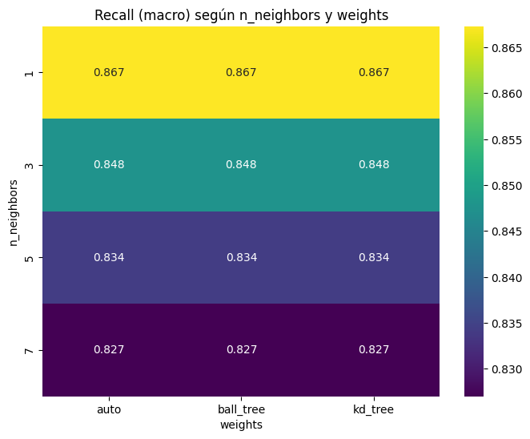
pivot = cv_results_df.pivot_table(index='param_n_neighbors',
columns='param_algorithm',
values='mean_fit_time')
plt.figure(figsize=(8,6))
sns.heatmap(pivot, annot=True, fmt=".3f", cmap="viridis")
plt.title("fit time (segs) Por algoritmo")
plt.xlabel("weights")
plt.ylabel("n_neighbors")
plt.show()
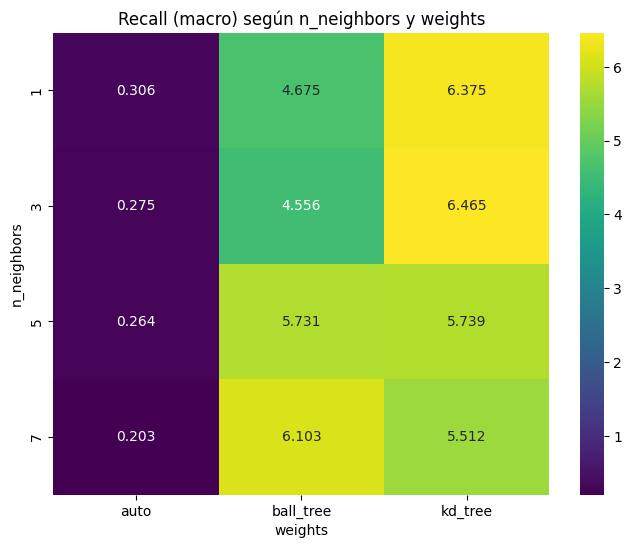
from sklearn.metrics import roc_curve, auc # Dejarlo aquí
y_pred_proba = knn_results['y_pred_prob']
# Binarización de las clases
classes = np.unique(y_test)
y_test_bin = label_binarize(y_test, classes=classes)
n_classes = y_test_bin.shape[1]
# Inicialización de diccionarios para almacenar métricas
fpr, tpr, roc_auc = {}, {}, {}
# Cálculo de las curvas ROC y AUC
plt.figure(figsize=(8, 6))
for i in range(n_classes):
fpr[i], tpr[i], _ = roc_curve(y_test_bin[:, i], y_pred_proba[:, i])
roc_auc[i] = auc(fpr[i], tpr[i])
plt.plot(fpr[i], tpr[i], label=f'Clase {classes[i]} (AUC = {roc_auc[i]:.2f})')
# Gráfica de la línea diagonal (clasificador aleatorio)
plt.plot([0, 1], [0, 1], 'k--', label='Clasificador Aleatorio')
# Configuración de la gráfica
plt.xlim([0.0, 1.0])
plt.ylim([0.0, 1.05])
plt.xlabel('Tasa de Falsos Positivos (FPR)')
plt.ylabel('Tasa de Verdaderos Positivos (TPR)')
plt.title('Curvas ROC Multiclase')
plt.legend(loc="lower right")
plt.grid(alpha=0.3)
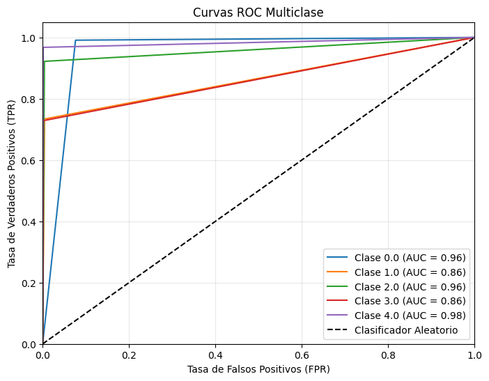
# Matriz de confusión
plt.figure(figsize=(6,5))
sns.heatmap(knn_results["confusion_matrix"], annot=True, fmt="d", cmap="Blues")
plt.title("Matriz de Confusión")
plt.xlabel("Predicción")
plt.ylabel("Real")
plt.show()
print("Reporte de Clasificación:\n", knn_results["classification_report"])
Reporte de Clasificación:
precision recall f1-score support
0.0 0.98 0.99 0.99 18118
1.0 0.82 0.73 0.77 556
2.0 0.94 0.92 0.93 1448
3.0 0.77 0.73 0.75 162
4.0 0.98 0.97 0.98 1608
accuracy 0.98 21892
macro avg 0.90 0.87 0.88 21892
weighted avg 0.98 0.98 0.98 21892
Decision Tree#
# libraries for decision trees
from sklearn.tree import DecisionTreeClassifier
Definir los hiperparámetos#
# Set the hyperparameters
tree_param_grid = {
'max_depth': [None, 10, 20],
'min_samples_split': [2, 5],
'criterion': ['gini', 'entropy'],
}
Grid search para entrenar el mejor estimador#
tree = DecisionTreeClassifier(random_state=random_state)
start_time = time.time()
tree_grid_search = GridSearchCV(tree, tree_param_grid, scoring=scorer, cv=cv, verbose=verbose, n_jobs=n_jobs, refit=refit)
tree_grid_search.fit(X_train, y_train)
training_time = time.time() - start_time
Fitting 5 folds for each of 12 candidates, totalling 60 fits
Guardamos los resultados#
model_name = "tree" # Cambiar el nombre del modelo
#-----------------#
evaluate_and_save_model(tree_grid_search, model_name, X_test, y_test, training_time)
Modelo y resultados guardados exitosamente en 'models/best_tree_model.pkl' y 'results/tree_results.pkl'.
Análisis de resultados generales y test#
tree_results = joblib.load("results/tree_results.pkl")
cv_results_df = pd.DataFrame(tree_results['cv_results'])
pivot = cv_results_df.pivot_table(index='param_criterion',
columns='param_max_depth',
values='mean_test_score')
plt.figure(figsize=(8,6))
sns.heatmap(pivot, annot=True, fmt=".3f", cmap="viridis")
plt.title("Recall (macro) según n_neighbors y weights")
plt.xlabel("max_depth")
plt.ylabel("criterion")
plt.show()
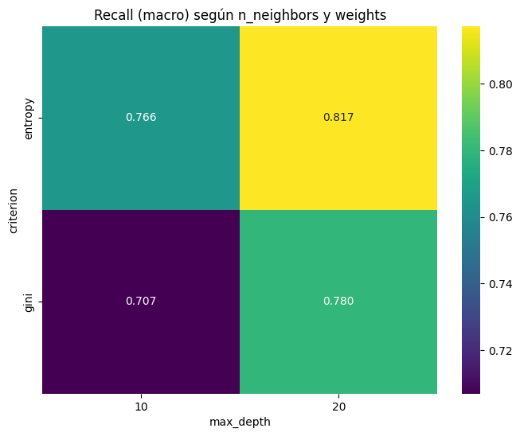
pivot = cv_results_df.pivot_table(index='param_criterion',
columns='param_min_samples_split',
values='mean_test_score')
plt.figure(figsize=(8,6))
sns.heatmap(pivot, annot=True, fmt=".3f", cmap="viridis")
plt.title("Recall (macro) según n_neighbors y weights")
plt.xlabel("weights")
plt.ylabel("min_samples_split")
plt.show()
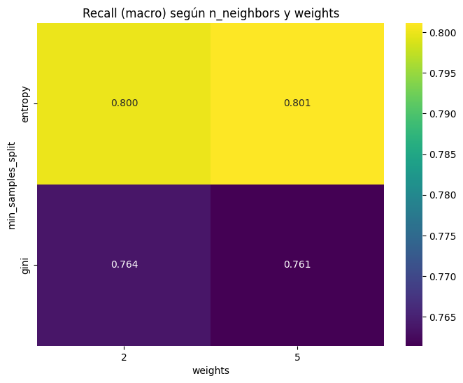
from sklearn.tree import export_graphviz
import graphviz
tree_estimador = joblib.load('models/best_tree_model.pkl')
export_graphviz(tree_estimador,
out_file="results/tree.dot",
impurity=False,
filled=True)
with open("results/tree.dot") as f:
dot_graph = f.read()
graph = graphviz.Source(dot_graph)
graphviz.Source(dot_graph)

importances = tree_estimador.feature_importances_
mask = importances > 0.01
filtered_importances = importances[mask]
filtered_features = X_train.columns[mask].astype(str)
plt.barh(np.arange(len(filtered_importances)), filtered_importances, align='center')
plt.yticks(np.arange(len(filtered_importances)), filtered_features)
plt.xlabel("Feature importance")
plt.ylabel("Feature")
plt.show()
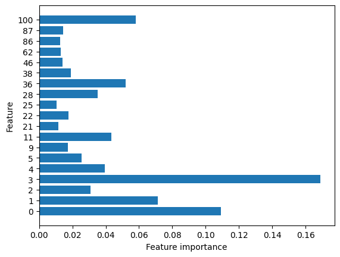
from sklearn.metrics import roc_curve, auc # Dejarlo aquí
y_pred_proba = tree_results['y_pred_prob']
# Binarización de las clases
classes = np.unique(y_test)
y_test_bin = label_binarize(y_test, classes=classes)
n_classes = y_test_bin.shape[1]
# Inicialización de diccionarios para almacenar métricas
fpr, tpr, roc_auc = {}, {}, {}
# Cálculo de las curvas ROC y AUC
plt.figure(figsize=(8, 6))
for i in range(n_classes):
fpr[i], tpr[i], _ = roc_curve(y_test_bin[:, i], y_pred_proba[:, i])
roc_auc[i] = auc(fpr[i], tpr[i])
plt.plot(fpr[i], tpr[i], label=f'Clase {classes[i]} (AUC = {roc_auc[i]:.2f})')
# Gráfica de la línea diagonal (clasificador aleatorio)
plt.plot([0, 1], [0, 1], 'k--', label='Clasificador Aleatorio')
# Configuración de la gráfica
plt.xlim([0.0, 1.0])
plt.ylim([0.0, 1.05])
plt.xlabel('Tasa de Falsos Positivos (FPR)')
plt.ylabel('Tasa de Verdaderos Positivos (TPR)')
plt.title('Curvas ROC Multiclase')
plt.legend(loc="lower right")
plt.grid(alpha=0.3)
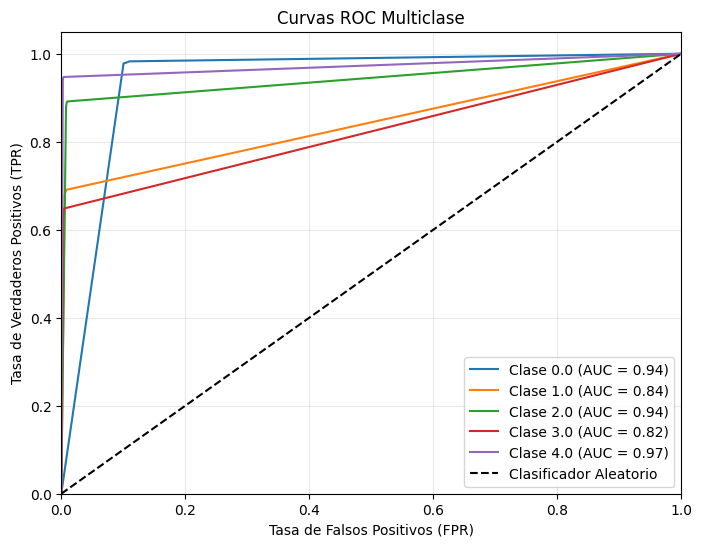
# Matriz de confusión
plt.figure(figsize=(6,5))
sns.heatmap(tree_results["confusion_matrix"], annot=True, fmt="d", cmap="Blues")
plt.title("Matriz de Confusión")
plt.xlabel("Predicción")
plt.ylabel("Real")
plt.show()
print("Reporte de Clasificación:\n", tree_results["classification_report"])
Reporte de Clasificación:
precision recall f1-score support
0.0 0.98 0.98 0.98 18118
1.0 0.72 0.69 0.70 556
2.0 0.88 0.89 0.88 1448
3.0 0.62 0.62 0.62 162
4.0 0.96 0.94 0.95 1608
accuracy 0.96 21892
macro avg 0.83 0.82 0.83 21892
weighted avg 0.96 0.96 0.96 21892
pd.DataFrame(tree_results["cv_results"]).sort_values(by="rank_test_score", ascending=True)
| mean_fit_time | std_fit_time | mean_score_time | std_score_time | param_criterion | param_max_depth | param_min_samples_split | params | split0_test_score | split1_test_score | split2_test_score | split3_test_score | split4_test_score | mean_test_score | std_test_score | rank_test_score | |
|---|---|---|---|---|---|---|---|---|---|---|---|---|---|---|---|---|
| 7 | 28.281401 | 0.350393 | 0.025302 | 0.001600 | entropy | None | 5 | {'criterion': 'entropy', 'max_depth': None, 'm... | 0.834703 | 0.829143 | 0.806245 | 0.809005 | 0.816709 | 0.819161 | 0.011110 | 1 |
| 11 | 24.388292 | 0.742805 | 0.018999 | 0.001673 | entropy | 20 | 5 | {'criterion': 'entropy', 'max_depth': 20, 'min... | 0.833463 | 0.822398 | 0.809584 | 0.812500 | 0.815908 | 0.818770 | 0.008496 | 2 |
| 6 | 29.123919 | 0.325252 | 0.024600 | 0.001623 | entropy | None | 2 | {'criterion': 'entropy', 'max_depth': None, 'm... | 0.828253 | 0.826122 | 0.804967 | 0.814492 | 0.813230 | 0.817413 | 0.008652 | 3 |
| 10 | 26.653801 | 0.752611 | 0.022399 | 0.002577 | entropy | 20 | 2 | {'criterion': 'entropy', 'max_depth': 20, 'min... | 0.826918 | 0.822659 | 0.805389 | 0.810408 | 0.815119 | 0.816098 | 0.007850 | 4 |
| 0 | 44.518721 | 1.361803 | 0.037007 | 0.003486 | gini | None | 2 | {'criterion': 'gini', 'max_depth': None, 'min_... | 0.809401 | 0.800555 | 0.788808 | 0.806297 | 0.810785 | 0.803169 | 0.007996 | 5 |
| 1 | 44.392492 | 1.377895 | 0.034506 | 0.003776 | gini | None | 5 | {'criterion': 'gini', 'max_depth': None, 'min_... | 0.813110 | 0.795805 | 0.790335 | 0.806895 | 0.790083 | 0.799246 | 0.009229 | 6 |
| 4 | 23.486303 | 0.137720 | 0.030402 | 0.001626 | gini | 20 | 2 | {'criterion': 'gini', 'max_depth': 20, 'min_sa... | 0.783653 | 0.788089 | 0.769154 | 0.789471 | 0.777107 | 0.781495 | 0.007527 | 7 |
| 5 | 23.353283 | 0.050061 | 0.026800 | 0.001327 | gini | 20 | 5 | {'criterion': 'gini', 'max_depth': 20, 'min_sa... | 0.780668 | 0.782953 | 0.768290 | 0.786696 | 0.770166 | 0.777754 | 0.007247 | 8 |
| 8 | 21.657659 | 0.171903 | 0.024302 | 0.001884 | entropy | 10 | 2 | {'criterion': 'entropy', 'max_depth': 10, 'min... | 0.738223 | 0.781583 | 0.747689 | 0.797494 | 0.767910 | 0.766580 | 0.021650 | 9 |
| 9 | 21.610049 | 0.156902 | 0.023200 | 0.000748 | entropy | 10 | 5 | {'criterion': 'entropy', 'max_depth': 10, 'min... | 0.738347 | 0.783031 | 0.746274 | 0.793917 | 0.765756 | 0.765465 | 0.021080 | 10 |
| 3 | 12.755892 | 0.113780 | 0.025201 | 0.001166 | gini | 10 | 5 | {'criterion': 'gini', 'max_depth': 10, 'min_sa... | 0.698692 | 0.696824 | 0.711598 | 0.721214 | 0.708410 | 0.707348 | 0.008912 | 11 |
| 2 | 12.804345 | 0.041674 | 0.026400 | 0.002059 | gini | 10 | 2 | {'criterion': 'gini', 'max_depth': 10, 'min_sa... | 0.700676 | 0.694387 | 0.709284 | 0.721743 | 0.706436 | 0.706505 | 0.009173 | 12 |
Logistic Regresión#
from sklearn.linear_model import LogisticRegression
Definir los hiperparámetos#
logreg_param_grid = {
'penalty': ['l1', 'l2', None],
'C': [0.1, 1, 10],
'solver': ['liblinear', 'saga']
}
Grid search para entrenar el mejor estimador#
logreg_clf = LogisticRegression(random_state=random_state, max_iter=1000, multi_class='auto')
start_time = time.time()
logreg_grid_search = GridSearchCV(
logreg_clf,
param_grid=logreg_param_grid, scoring=scorer, cv=cv, verbose=verbose, n_jobs=n_jobs, refit=refit)
logreg_grid_search.fit(X_train, y_train)
training_time = time.time() - start_time
Guardamos los resultados#
model_name = "reglog" # Cambiar el nombre del modelo
#-----------------#
evaluate_and_save_model(logreg_grid_search, model_name, X_test, y_test, training_time)
Modelo y resultados guardados exitosamente en 'models/best_reglog_model.pkl' y 'results/reglog_results.pkl'.
Análisis de resultados generales y test#
logreg_results = joblib.load("results/reglog_results.pkl")
cv_results_df = pd.DataFrame(logreg_results['cv_results'])
cv_results_df.columns
Index(['mean_fit_time', 'std_fit_time', 'mean_score_time', 'std_score_time',
'param_C', 'param_penalty', 'param_solver', 'params',
'split0_test_score', 'split1_test_score', 'split2_test_score',
'split3_test_score', 'split4_test_score', 'mean_test_score',
'std_test_score', 'rank_test_score'],
dtype='object')
pivot = cv_results_df.pivot_table(index='param_C',
columns='param_solver',
values='mean_test_score')
plt.figure(figsize=(8,6))
sns.heatmap(pivot, annot=True, fmt=".3f", cmap="viridis")
plt.title("Recall (macro)")
plt.xlabel("solver")
plt.ylabel("C")
plt.show()
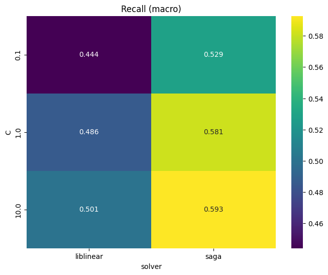
pivot = cv_results_df.pivot_table(index='param_penalty',
columns='param_solver',
values='mean_test_score')
plt.figure(figsize=(8,6))
sns.heatmap(pivot, annot=True, fmt=".3f", cmap="viridis")
plt.title("Recall (macro)")
plt.xlabel("solver")
plt.ylabel("penalty")
plt.show()
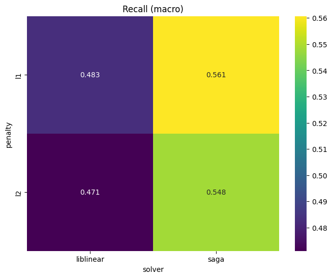
from sklearn.metrics import roc_curve, auc # Dejarlo aquí
y_pred_proba = logreg_results['y_pred_prob']
# Binarización de las clases
classes = np.unique(y_test)
y_test_bin = label_binarize(y_test, classes=classes)
n_classes = y_test_bin.shape[1]
# Inicialización de diccionarios para almacenar métricas
fpr, tpr, roc_auc = {}, {}, {}
# Cálculo de las curvas ROC y AUC
plt.figure(figsize=(8, 6))
for i in range(n_classes):
fpr[i], tpr[i], _ = roc_curve(y_test_bin[:, i], y_pred_proba[:, i])
roc_auc[i] = auc(fpr[i], tpr[i])
plt.plot(fpr[i], tpr[i], label=f'Clase {classes[i]} (AUC = {roc_auc[i]:.2f})')
# Gráfica de la línea diagonal (clasificador aleatorio)
plt.plot([0, 1], [0, 1], 'k--', label='Clasificador Aleatorio')
# Configuración de la gráfica
plt.xlim([0.0, 1.0])
plt.ylim([0.0, 1.05])
plt.xlabel('Tasa de Falsos Positivos (FPR)')
plt.ylabel('Tasa de Verdaderos Positivos (TPR)')
plt.title('Curvas ROC Multiclase')
plt.legend(loc="lower right")
plt.grid(alpha=0.3)
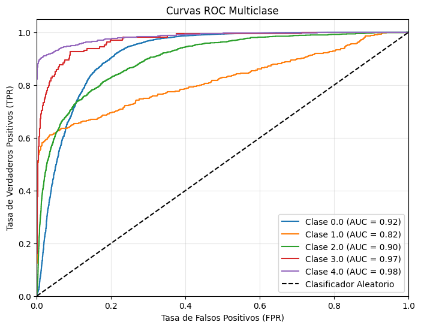
# Matriz de confusión
plt.figure(figsize=(6,5))
sns.heatmap(logreg_results["confusion_matrix"], annot=True, fmt="d", cmap="Blues")
plt.title("Matriz de Confusión")
plt.xlabel("Predicción")
plt.ylabel("Real")
plt.show()
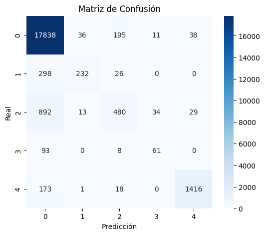
print("Reporte de Clasificación:\n", logreg_results["classification_report"])
Reporte de Clasificación:
precision recall f1-score support
0.0 0.92 0.98 0.95 18118
1.0 0.82 0.42 0.55 556
2.0 0.66 0.33 0.44 1448
3.0 0.58 0.38 0.46 162
4.0 0.95 0.88 0.92 1608
accuracy 0.91 21892
macro avg 0.79 0.60 0.66 21892
weighted avg 0.90 0.91 0.90 21892
Random Forest#
from sklearn.ensemble import RandomForestClassifier
Definir los hiperparámetos#
rf_param_grid = {
'n_estimators': [100, 200, 400],
'max_depth': [None, 10, 20],
'min_samples_leaf': [1, 2, 4]
}
rf = RandomForestClassifier(random_state=42)
start_time = time.time()
rf_grid_search = GridSearchCV(rf, rf_param_grid, scoring=scorer, cv=cv, verbose=verbose, n_jobs=n_jobs, refit=refit)
rf_grid_search.fit(X_train, y_train)
training_time = time.time() - start_time
Fitting 5 folds for each of 27 candidates, totalling 135 fits
Guardamos los resultados#
model_name = "rf" # Cambiar el nombre del modelo
#-----------------#
evaluate_and_save_model(rf_grid_search, model_name, X_test, y_test, training_time)
Modelo y resultados guardados exitosamente en 'models/best_rf_model.pkl' y 'results/rf_results.pkl'.
Análisis de resultados generales y test#
rf_results = joblib.load("results/rf_results.pkl")
cv_results_df = pd.DataFrame(rf_results['cv_results'])
cv_results_df.columns
Index(['mean_fit_time', 'std_fit_time', 'mean_score_time', 'std_score_time',
'param_max_depth', 'param_min_samples_leaf', 'param_n_estimators',
'params', 'split0_test_score', 'split1_test_score', 'split2_test_score',
'split3_test_score', 'split4_test_score', 'mean_test_score',
'std_test_score', 'rank_test_score'],
dtype='object')
pivot = cv_results_df.pivot_table(index='param_max_depth',
columns='param_min_samples_leaf',
values='mean_test_score')
plt.figure(figsize=(8,6))
sns.heatmap(pivot, annot=True, fmt=".3f", cmap="viridis")
plt.title("Recall (macro) según n_neighbors y weights")
plt.xlabel("weights")
plt.ylabel("n_neighbors")
plt.show()
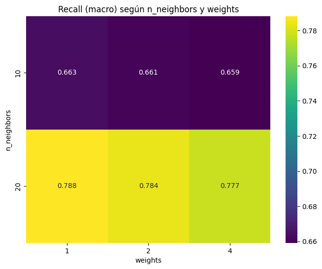
pivot = cv_results_df.pivot_table(index='param_max_depth',
columns='param_n_estimators',
values='mean_test_score')
plt.figure(figsize=(8,6))
sns.heatmap(pivot, annot=True, fmt=".3f", cmap="viridis")
plt.title("Recall (macro) según n_neighbors y weights")
plt.xlabel("weights")
plt.ylabel("n_neighbors")
plt.show()
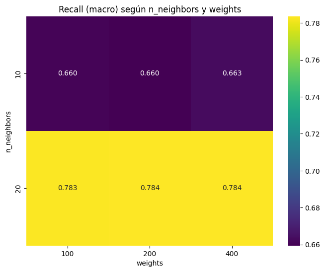
from sklearn.metrics import roc_curve, auc # Dejarlo aquí
y_pred_proba = rf_results['y_pred_prob']
# Binarización de las clases
classes = np.unique(y_test)
y_test_bin = label_binarize(y_test, classes=classes)
n_classes = y_test_bin.shape[1]
# Inicialización de diccionarios para almacenar métricas
fpr, tpr, roc_auc = {}, {}, {}
# Cálculo de las curvas ROC y AUC
plt.figure(figsize=(8, 6))
for i in range(n_classes):
fpr[i], tpr[i], _ = roc_curve(y_test_bin[:, i], y_pred_proba[:, i])
roc_auc[i] = auc(fpr[i], tpr[i])
plt.plot(fpr[i], tpr[i], label=f'Clase {classes[i]} (AUC = {roc_auc[i]:.2f})')
# Gráfica de la línea diagonal (clasificador aleatorio)
plt.plot([0, 1], [0, 1], 'k--', label='Clasificador Aleatorio')
# Configuración de la gráfica
plt.xlim([0.0, 1.0])
plt.ylim([0.0, 1.05])
plt.xlabel('Tasa de Falsos Positivos (FPR)')
plt.ylabel('Tasa de Verdaderos Positivos (TPR)')
plt.title('Curvas ROC Multiclase')
plt.legend(loc="lower right")
plt.grid(alpha=0.3)
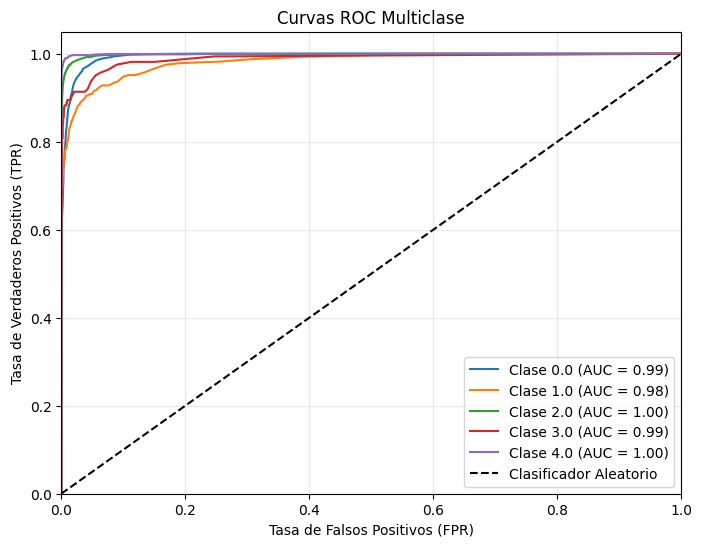
# Matriz de confusión
plt.figure(figsize=(6,5))
sns.heatmap(rf_results["confusion_matrix"], annot=True, fmt="d", cmap="Blues")
plt.title("Matriz de Confusión")
plt.xlabel("Predicción")
plt.ylabel("Real")
plt.show()
print("Reporte de Clasificación:\n", rf_results["classification_report"])
Reporte de Clasificación:
precision recall f1-score support
0.0 0.97 1.00 0.99 18118
1.0 0.98 0.61 0.75 556
2.0 0.98 0.88 0.93 1448
3.0 0.88 0.63 0.73 162
4.0 0.99 0.95 0.97 1608
accuracy 0.97 21892
macro avg 0.96 0.81 0.87 21892
weighted avg 0.97 0.97 0.97 21892
XGBoost#
import xgboost as xgb
xgb_param_grid = {
'tree_method': ['hist', 'approx'],
'learning_rate': [0.01, 0.1, 0.2],
#'early_stopping_rounds': [10, 20],
#'max_depth': [3, 6],
'n_estimators': [100,200,400]
}
Grid search para entrenar el mejor estimador#
xgb_model = xgb.XGBClassifier(device='cuda:0', verbosity=2)
start_time = time.time()
xgb_grid_search = GridSearchCV(
xgb_model,
param_grid=xgb_param_grid,
scoring=scorer,
cv=cv,
verbose=verbose,
n_jobs=n_jobs,
refit=refit
)
xgb_grid_search.fit(X_train, y_train)
training_time = time.time() - start_time
Fitting 5 folds for each of 18 candidates, totalling 90 fits
[05:41:57] INFO: C:\actions-runner\_work\xgboost\xgboost\src\data\iterative_dmatrix.cc:53: Finished constructing the `IterativeDMatrix`: (87554, 187, 16372598).
[05:41:57] INFO: C:\actions-runner\_work\xgboost\xgboost\src\data\ellpack_page.cu:167: Ellpack is dense.
Guardamos los resultados#
model_name = "xgb" # Cambiar el nombre del modelo
#-----------------#
evaluate_and_save_model(xgb_grid_search, model_name, X_test, y_test, training_time)
c:\Users\luisl\anaconda3\envs\practical-exam\lib\site-packages\xgboost\core.py:729: UserWarning: [05:42:13] WARNING: C:\actions-runner\_work\xgboost\xgboost\src\common\error_msg.cc:58: Falling back to prediction using DMatrix due to mismatched devices. This might lead to higher memory usage and slower performance. XGBoost is running on: cuda:0, while the input data is on: cpu.
Potential solutions:
- Use a data structure that matches the device ordinal in the booster.
- Set the device for booster before call to inplace_predict.
This warning will only be shown once.
return func(**kwargs)
Modelo y resultados guardados exitosamente en 'models/best_xgb_model.pkl' y 'results/xgb_results.pkl'.
Análisis de resultados generales y test#
xgb_results = joblib.load("results/xgb_results.pkl")
cv_results_df = pd.DataFrame(xgb_results['cv_results'])
pivot = cv_results_df.pivot_table(index='param_learning_rate',
columns='param_n_estimators',
values='mean_test_score')
plt.figure(figsize=(8,6))
sns.heatmap(pivot, annot=True, fmt=".3f", cmap="viridis")
plt.title("Recall (macro)")
plt.xlabel("n_estimators")
plt.ylabel("learning_rate")
plt.show()
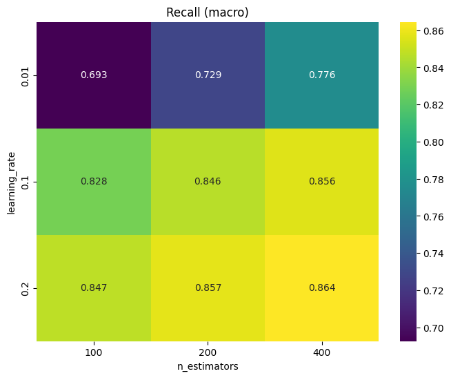
from sklearn.metrics import roc_curve, auc # Dejarlo aquí
y_pred_proba = xgb_results['y_pred_prob']
# Binarización de las clases
classes = np.unique(y_test)
y_test_bin = label_binarize(y_test, classes=classes)
n_classes = y_test_bin.shape[1]
# Inicialización de diccionarios para almacenar métricas
fpr, tpr, roc_auc = {}, {}, {}
# Cálculo de las curvas ROC y AUC
plt.figure(figsize=(8, 6))
for i in range(n_classes):
fpr[i], tpr[i], _ = roc_curve(y_test_bin[:, i], y_pred_proba[:, i])
roc_auc[i] = auc(fpr[i], tpr[i])
plt.plot(fpr[i], tpr[i], label=f'Clase {classes[i]} (AUC = {roc_auc[i]:.2f})')
# Gráfica de la línea diagonal (clasificador aleatorio)
plt.plot([0, 1], [0, 1], 'k--', label='Clasificador Aleatorio')
# Configuración de la gráfica
plt.xlim([0.0, 1.0])
plt.ylim([0.0, 1.05])
plt.xlabel('Tasa de Falsos Positivos (FPR)')
plt.ylabel('Tasa de Verdaderos Positivos (TPR)')
plt.title('Curvas ROC Multiclase')
plt.legend(loc="lower right")
plt.grid(alpha=0.3)
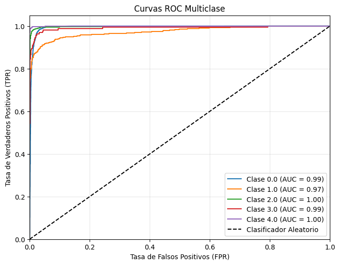
# Matriz de confusión
plt.figure(figsize=(6,5))
sns.heatmap(xgb_results["confusion_matrix"], annot=True, fmt="d", cmap="Blues")
plt.title("Matriz de Confusión")
plt.xlabel("Predicción")
plt.ylabel("Real")
plt.show()
print("Reporte de Clasificación:\n", xgb_results["classification_report"])
Reporte de Clasificación:
precision recall f1-score support
0.0 0.98 1.00 0.99 18118
1.0 0.96 0.71 0.81 556
2.0 0.98 0.93 0.95 1448
3.0 0.88 0.75 0.81 162
4.0 0.99 0.98 0.98 1608
accuracy 0.98 21892
macro avg 0.96 0.87 0.91 21892
weighted avg 0.98 0.98 0.98 21892
LinearSVM#
# Libraies for SVM
from sklearn.svm import LinearSVC
# Set hyperparameters
linear_svc_param_grid = {
'C': [0.1, 1.0, 10.0],
'penalty': ['l1', 'l2'],
'max_iter': [100, 200]
}
# Modelo LinearSVC
svc_model = LinearSVC(random_state=random_state, dual=False)
# GridSearchCV para LinearSVC
svc_grid_search = GridSearchCV(
svc_model,
param_grid=linear_svc_param_grid,
scoring=scorer,
cv=cv,
verbose=verbose,
n_jobs=n_jobs,
refit=refit
)
# Entrenamiento y ajuste del modelo
start_time_svc = time.time()
svc_grid_search.fit(X_train, y_train)
training_time_svc = time.time() - start_time_svc
Fitting 5 folds for each of 12 candidates, totalling 60 fits
svc_model_name = "linear_svc"
# Evaluación y guardado del modelo
evaluate_and_save_model(svc_grid_search, svc_model_name, X_test, y_test, training_time_svc)
Modelo y resultados guardados exitosamente en 'models/best_linear_svc_model.pkl' y 'results/linear_svc_results.pkl'.
Análisis de resultados generales y test#
linear_svc_results = joblib.load("results/linear_svc_results.pkl")
cv_results_df = pd.DataFrame(linear_svc_results['cv_results'])
cv_results_df.columns
Index(['mean_fit_time', 'std_fit_time', 'mean_score_time', 'std_score_time',
'param_C', 'param_max_iter', 'param_penalty', 'params',
'split0_test_score', 'split1_test_score', 'split2_test_score',
'split3_test_score', 'split4_test_score', 'mean_test_score',
'std_test_score', 'rank_test_score'],
dtype='object')
pivot = cv_results_df.pivot_table(index='param_C',
columns='param_penalty',
values='mean_test_score')
plt.figure(figsize=(8,6))
sns.heatmap(pivot, annot=True, fmt=".3f", cmap="viridis")
plt.title("Recall (macro) según:")
plt.xlabel("Penalty")
plt.ylabel("C")
plt.show()
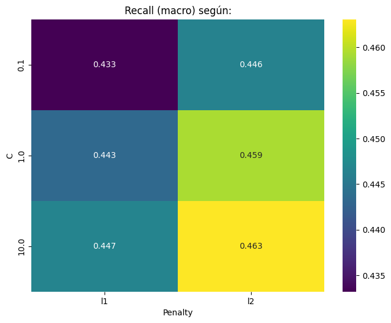
from sklearn.metrics import roc_curve, auc # Dejarlo aquí
y_pred_proba = linear_svc_results['y_pred_prob']
# Binarización de las clases
classes = np.unique(y_test)
y_test_bin = label_binarize(y_test, classes=classes)
n_classes = y_test_bin.shape[1]
# Inicialización de diccionarios para almacenar métricas
fpr, tpr, roc_auc = {}, {}, {}
# Cálculo de las curvas ROC y AUC
plt.figure(figsize=(8, 6))
for i in range(n_classes):
fpr[i], tpr[i], _ = roc_curve(y_test_bin[:, i], y_pred_proba[:, i])
roc_auc[i] = auc(fpr[i], tpr[i])
plt.plot(fpr[i], tpr[i], label=f'Clase {classes[i]} (AUC = {roc_auc[i]:.2f})')
# Gráfica de la línea diagonal (clasificador aleatorio)
plt.plot([0, 1], [0, 1], 'k--', label='Clasificador Aleatorio')
# Configuración de la gráfica
plt.xlim([0.0, 1.0])
plt.ylim([0.0, 1.05])
plt.xlabel('Tasa de Falsos Positivos (FPR)')
plt.ylabel('Tasa de Verdaderos Positivos (TPR)')
plt.title('Curvas ROC Multiclase')
plt.legend(loc="lower right")
plt.grid(alpha=0.3)
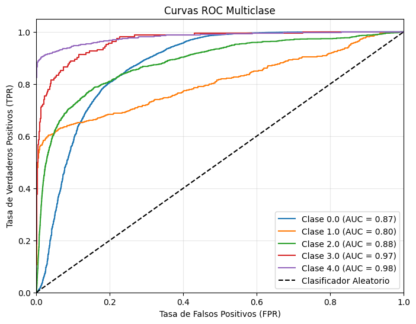
# Matriz de confusión
plt.figure(figsize=(6,5))
sns.heatmap(linear_svc_results["confusion_matrix"], annot=True, fmt="d", cmap="Blues")
plt.title("Matriz de Confusión")
plt.xlabel("Predicción")
plt.ylabel("Real")
plt.show()
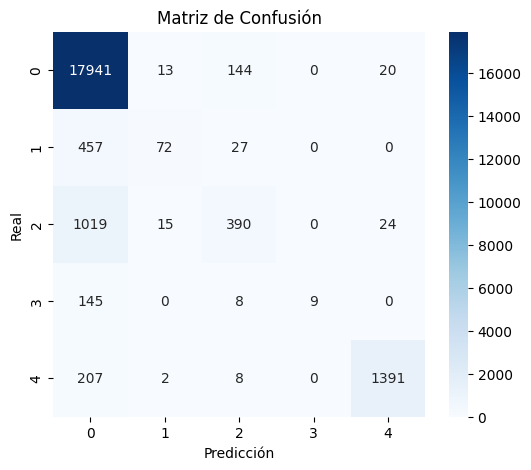
print("Reporte de Clasificación:\n", linear_svc_results["classification_report"])
Reporte de Clasificación:
precision recall f1-score support
0.0 0.91 0.99 0.95 18118
1.0 0.71 0.13 0.22 556
2.0 0.68 0.27 0.39 1448
3.0 1.00 0.06 0.11 162
4.0 0.97 0.87 0.91 1608
accuracy 0.90 21892
macro avg 0.85 0.46 0.51 21892
weighted avg 0.89 0.90 0.88 21892
SVM (SVC)#
Definir los hiperparámetros#
from sklearn.svm import SVC
# Parámetros para SVC
svc_param_grid = {
'C': [0.1, 1.0, 10.],
'kernel': ['linear', 'rbf'],
#'gamma': ['scale', 'auto']
}
# Modelo SVC
svc_model = SVC(random_state=random_state, probability=True)
# GridSearchCV para SVC
svc_grid_search = GridSearchCV(
svc_model,
param_grid=svc_param_grid,
scoring=scorer,
cv=cv,
verbose=verbose,
n_jobs=n_jobs,
refit=refit
)
# Entrenamiento y ajuste del modelo
start_time_svc = time.time()
svc_grid_search.fit(X_train, y_train)
training_time_svc = time.time() - start_time_svc
Fitting 5 folds for each of 6 candidates, totalling 30 fits
# Nombre del modelo
svc_model_name = "svc"
# Evaluación y guardado del modelo
evaluate_and_save_model(svc_grid_search, svc_model_name, X_test, y_test, training_time_svc)
Modelo y resultados guardados exitosamente en 'models/best_svc_model.pkl' y 'results/svc_results.pkl'.
Análisis de resultados generales y test#
svc_results = joblib.load("results/svc_results.pkl")
cv_results_df = pd.DataFrame(svc_results['cv_results'])
cv_results_df.columns
Index(['mean_fit_time', 'std_fit_time', 'mean_score_time', 'std_score_time',
'param_C', 'param_kernel', 'params', 'split0_test_score',
'split1_test_score', 'split2_test_score', 'split3_test_score',
'split4_test_score', 'mean_test_score', 'std_test_score',
'rank_test_score'],
dtype='object')
pivot = cv_results_df.pivot_table(index='param_C',
columns='param_kernel',
values='mean_test_score')
plt.figure(figsize=(8,6))
sns.heatmap(pivot, annot=True, fmt=".3f", cmap="viridis")
plt.title("Recall (macro)")
plt.xlabel("kernel")
plt.ylabel("C")
plt.show()
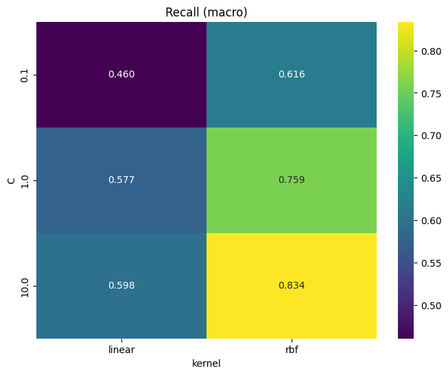
from sklearn.metrics import roc_curve, auc # Dejarlo aquí
y_pred_proba = svc_results['y_pred_prob']
# Binarización de las clases
classes = np.unique(y_test)
y_test_bin = label_binarize(y_test, classes=classes)
n_classes = y_test_bin.shape[1]
# Inicialización de diccionarios para almacenar métricas
fpr, tpr, roc_auc = {}, {}, {}
# Cálculo de las curvas ROC y AUC
plt.figure(figsize=(8, 6))
for i in range(n_classes):
fpr[i], tpr[i], _ = roc_curve(y_test_bin[:, i], y_pred_proba[:, i])
roc_auc[i] = auc(fpr[i], tpr[i])
plt.plot(fpr[i], tpr[i], label=f'Clase {classes[i]} (AUC = {roc_auc[i]:.2f})')
# Gráfica de la línea diagonal (clasificador aleatorio)
plt.plot([0, 1], [0, 1], 'k--', label='Clasificador Aleatorio')
# Configuración de la gráfica
plt.xlim([0.0, 1.0])
plt.ylim([0.0, 1.05])
plt.xlabel('Tasa de Falsos Positivos (FPR)')
plt.ylabel('Tasa de Verdaderos Positivos (TPR)')
plt.title('Curvas ROC Multiclase')
plt.legend(loc="lower right")
plt.grid(alpha=0.3)
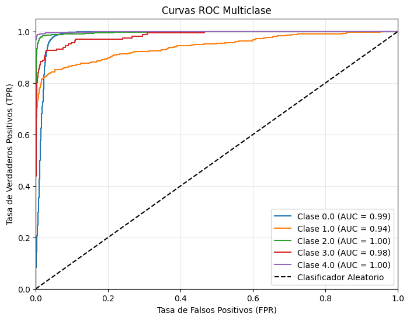
# Matriz de confusión
plt.figure(figsize=(6,5))
sns.heatmap(svc_results["confusion_matrix"], annot=True, fmt="d", cmap="Blues")
plt.title("Matriz de Confusión")
plt.xlabel("Predicción")
plt.ylabel("Real")
plt.show()
print("Reporte de Clasificación:\n", svc_results["classification_report"])
Reporte de Clasificación:
precision recall f1-score support
0.0 0.98 1.00 0.99 18118
1.0 0.96 0.61 0.75 556
2.0 0.96 0.92 0.94 1448
3.0 0.82 0.57 0.68 162
4.0 0.99 0.97 0.98 1608
accuracy 0.98 21892
macro avg 0.94 0.81 0.87 21892
weighted avg 0.98 0.98 0.98 21892
pd.DataFrame(svc_results["cv_results"]).sort_values(by="rank_test_score", ascending=True)
| mean_fit_time | std_fit_time | mean_score_time | std_score_time | param_C | param_kernel | params | split0_test_score | split1_test_score | split2_test_score | split3_test_score | split4_test_score | mean_test_score | std_test_score | rank_test_score | |
|---|---|---|---|---|---|---|---|---|---|---|---|---|---|---|---|
| 5 | 2233.969802 | 436.758923 | 67.022623 | 57.874770 | 10.0 | rbf | {'C': 10.0, 'kernel': 'rbf'} | 0.832433 | 0.843225 | 0.835353 | 0.837872 | 0.820227 | 0.833822 | 0.007667 | 1 |
| 3 | 2767.927592 | 397.387533 | 114.976649 | 101.671240 | 1.0 | rbf | {'C': 1.0, 'kernel': 'rbf'} | 0.754018 | 0.764739 | 0.764034 | 0.763727 | 0.750244 | 0.759352 | 0.006025 | 2 |
| 1 | 4396.757558 | 528.677218 | 172.372242 | 150.589776 | 0.1 | rbf | {'C': 0.1, 'kernel': 'rbf'} | 0.605936 | 0.618103 | 0.614637 | 0.622205 | 0.619712 | 0.616119 | 0.005653 | 3 |
| 4 | 8877.127614 | 610.550724 | 35.011635 | 7.983089 | 10.0 | linear | {'C': 10.0, 'kernel': 'linear'} | 0.572580 | 0.599484 | 0.600848 | 0.615721 | 0.600032 | 0.597733 | 0.013959 | 4 |
| 2 | 5552.381414 | 108.362752 | 79.070506 | 4.659726 | 1.0 | linear | {'C': 1.0, 'kernel': 'linear'} | 0.555127 | 0.574629 | 0.582190 | 0.589673 | 0.581227 | 0.576569 | 0.011735 | 5 |
| 0 | 4864.826110 | 34.544831 | 96.425620 | 4.032074 | 0.1 | linear | {'C': 0.1, 'kernel': 'linear'} | 0.457985 | 0.459231 | 0.463721 | 0.461604 | 0.459738 | 0.460456 | 0.002005 | 6 |
MLP (sklearn)#
from sklearn.neural_network import MLPClassifier
# Set hyperparameters
mlp_param_grid = {
'hidden_layer_sizes': [(50,), (100,), (50, 50)],
'activation': ['logistic', 'tanh'],
'solver': ['adam', 'sgd'],
'alpha': [0.0001, 0.001],
'learning_rate': ['constant', 'adaptive'],
'max_iter': [200, 500]
}
# Modelo MLPClassifier
mlp_model = MLPClassifier(random_state=random_state)
# GridSearchCV para MLPClassifier
mlp_grid_search = GridSearchCV(
mlp_model,
param_grid=mlp_param_grid,
scoring=scorer,
cv=cv,
verbose=verbose,
n_jobs=n_jobs,
refit=refit
)
# Entrenamiento y ajuste del modelo
start_time_mlp = time.time()
mlp_grid_search.fit(X_train, y_train)
training_time_mlp = time.time() - start_time_mlp
Fitting 5 folds for each of 96 candidates, totalling 480 fits
c:\Users\luisl\anaconda3\envs\practical-exam\lib\site-packages\sklearn\neural_network\_multilayer_perceptron.py:690: ConvergenceWarning: Stochastic Optimizer: Maximum iterations (200) reached and the optimization hasn't converged yet.
warnings.warn(
# Nombre del modelo
mlp_model_name = "mlp"
# Evaluación y guardado del modelo
evaluate_and_save_model(mlp_grid_search, mlp_model_name, X_test, y_test, training_time_mlp)
Modelo y resultados guardados exitosamente en 'models/best_mlp_model.pkl' y 'results/mlp_results.pkl'.
Análisis de resultados generales y test#
mlp_results = joblib.load("results/mlp_results.pkl")
cv_results_df = pd.DataFrame(mlp_results['cv_results'])
cv_results_df.columns
Index(['mean_fit_time', 'std_fit_time', 'mean_score_time', 'std_score_time',
'param_activation', 'param_alpha', 'param_hidden_layer_sizes',
'param_learning_rate', 'param_max_iter', 'param_solver', 'params',
'split0_test_score', 'split1_test_score', 'split2_test_score',
'split3_test_score', 'split4_test_score', 'mean_test_score',
'std_test_score', 'rank_test_score'],
dtype='object')
pivot = cv_results_df.pivot_table(index='param_hidden_layer_sizes',
columns='param_learning_rate',
values='mean_test_score')
plt.figure(figsize=(8,6))
sns.heatmap(pivot, annot=True, fmt=".3f", cmap="viridis")
plt.title("Recall (macro)")
plt.xlabel("weights")
plt.ylabel("algorithm")
plt.show()
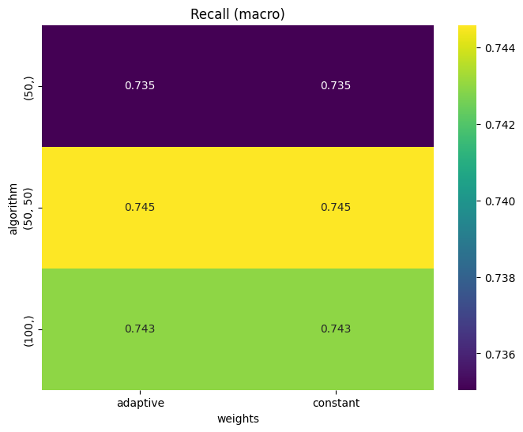
from sklearn.metrics import roc_curve, auc # Dejarlo aquí
y_pred_proba = mlp_results['y_pred_prob']
# Binarización de las clases
classes = np.unique(y_test)
y_test_bin = label_binarize(y_test, classes=classes)
n_classes = y_test_bin.shape[1]
# Inicialización de diccionarios para almacenar métricas
fpr, tpr, roc_auc = {}, {}, {}
# Cálculo de las curvas ROC y AUC
plt.figure(figsize=(8, 6))
for i in range(n_classes):
fpr[i], tpr[i], _ = roc_curve(y_test_bin[:, i], y_pred_proba[:, i])
roc_auc[i] = auc(fpr[i], tpr[i])
plt.plot(fpr[i], tpr[i], label=f'Clase {classes[i]} (AUC = {roc_auc[i]:.2f})')
# Gráfica de la línea diagonal (clasificador aleatorio)
plt.plot([0, 1], [0, 1], 'k--', label='Clasificador Aleatorio')
# Configuración de la gráfica
plt.xlim([0.0, 1.0])
plt.ylim([0.0, 1.05])
plt.xlabel('Tasa de Falsos Positivos (FPR)')
plt.ylabel('Tasa de Verdaderos Positivos (TPR)')
plt.title('Curvas ROC Multiclase')
plt.legend(loc="lower right")
plt.grid(alpha=0.3)
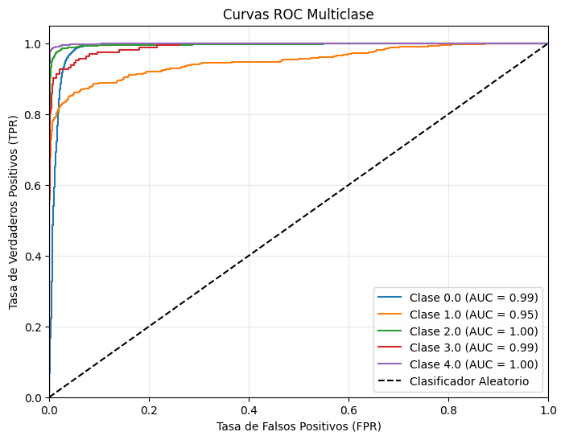
# Matriz de confusión
plt.figure(figsize=(6,5))
sns.heatmap(mlp_results["confusion_matrix"], annot=True, fmt="d", cmap="Blues")
plt.title("Matriz de Confusión")
plt.xlabel("Predicción")
plt.ylabel("Real")
plt.show()
print("Reporte de Clasificación:\n", mlp_results["classification_report"])
Reporte de Clasificación:
precision recall f1-score support
0.0 0.99 0.99 0.99 18118
1.0 0.80 0.74 0.77 556
2.0 0.95 0.94 0.94 1448
3.0 0.81 0.77 0.79 162
4.0 0.98 0.98 0.98 1608
accuracy 0.98 21892
macro avg 0.90 0.88 0.89 21892
weighted avg 0.98 0.98 0.98 21892
Configuración para los modelos con GPU#
# Liberías para todos los modelos con GPU
import tensorflow as tf
import keras_tuner as kt
from tensorflow import keras
from tensorflow.keras import layers, metrics, models, optimizers, losses
from tensorflow.keras.models import Sequential, Model
from tensorflow.keras.layers import Dropout, Dense, Input
device_name = tf.config.list_physical_devices('GPU')
print(f"Usando {device_name}")
Usando [PhysicalDevice(name='/physical_device:GPU:0', device_type='GPU')]
def evaluate_and_save_keras_model(model, model_name, X_test, y_test, training_time):
"""
Evalúa el modelo Keras y guarda los resultados de la evaluación junto con el modelo.
Parámetros:
- model: Modelo Keras entrenado.
- model_name (str): Nombre del modelo para guardar resultados.
- X_test (array-like): Datos de prueba.
- y_test (array-like): Etiquetas de prueba en formato one-hot.
- training_time (float): Tiempo de entrenamiento (o búsqueda) en segundos.
Se guardan:
- Resultados de evaluación en 'results/{model_name}_results.pkl'
- Modelo guardado en 'models/best_{model_name}_model.h5'
Métricas calculadas: precisión, recall, accuracy, F1, matriz de confusión,
ROC AUC (multiclase) y reporte de clasificación.
"""
# Obtener predicciones y convertir a etiquetas
y_pred_proba = model.predict(X_test)
y_pred = np.argmax(y_pred_proba, axis=1)
y_true = np.argmax(y_test, axis=1)
# Calcular ROC AUC si es posible (multiclase 'ovr')
try:
auc = roc_auc_score(y_test, y_pred_proba, multi_class='ovr')
except Exception:
auc = float('nan')
# Calcular otras métricas
precision = precision_score(y_true, y_pred, average='macro')
recall = recall_score(y_true, y_pred, average='macro')
accuracy = accuracy_score(y_true, y_pred)
f1 = f1_score(y_true, y_pred, average='macro')
cm = confusion_matrix(y_true, y_pred)
report = classification_report(y_true, y_pred)
# Guardar resultados en un diccionario
results = {
'precision_test': precision,
'recall_test': recall,
'accuracy_test': accuracy,
'f1_score_test': f1,
'confusion_matrix': cm,
'y_pred_prob': y_pred_proba,
'auc_test': auc,
'classification_report': report,
'cpu_time': training_time
}
# Guardar los resultados y el modelo
joblib.dump(results, f"results/{model_name}_results.pkl")
model.save(f"models/best_{model_name}_model.h5")
print(f"Modelo y resultados guardados en 'models/best_{model_name}_model.h5' y 'results/{model_name}_results.pkl'.")
LSTM#
Inicialmente definimos las entradas en un formato válido para la LSTM#
# Ajuste de los datos para el modelo LSTM
X = df_train.iloc[:, :-1].values.reshape((-1, 187, 1)).astype(np.float32)
y = tf.keras.utils.to_categorical(df_train.iloc[:, -1].values.astype(int), num_classes=5)
X_train, X_val, y_train, y_val = train_test_split(X, y, test_size=0.2, stratify=y, random_state=42)
X_test = df_test.iloc[:, :-1].values.reshape((-1, 187, 1)).astype(np.float32)
y_test = tf.keras.utils.to_categorical(df_test.iloc[:, -1].values.astype(int), num_classes=5)
Construimos el espacio de búsqueda con Keras tunner#
# Función para construir el modelo LSTM con Keras Tuner
def build_model_lstm(hp):
model = Sequential()
# Primera capa LSTM
model.add(layers.LSTM(
units=hp.Int('lstm_units', 32, 128, step=32),
return_sequences=True,
input_shape=(187, 1)
))
model.add(layers.Dropout(hp.Float('dropout1',0.0, 0.3, step=0.1)))
# Segunda capa LSTM
model.add(layers.LSTM(
units=hp.Int('lstm_units2', 32, 128, step=32)
))
model.add(layers.Dropout(hp.Float('dropout2',0.0, 0.3, step=0.1)))
# Capa densa
model.add(layers.Dense(
units=hp.Int('dense_units', 32, 128, step=32),
activation='relu'
))
model.add(layers.Dense(5, activation='softmax'))
model.compile(
optimizer=keras.optimizers.Adam(
learning_rate=hp.Choice('lr', [1e-2, 1e-3, 1e-4])
),
loss='categorical_crossentropy', # Función de pérdida para clasificación multiclase
metrics=[metrics.Recall(name='recall'), 'accuracy'] # Se calcula el recall
)
return model
tuner_lstm = kt.Hyperband(
build_model_lstm,
objective=kt.Objective("val_recall", direction="max"),
max_epochs=100,
seed=42,
directory='models',
project_name='lstm',
overwrite=True
)
tuner_lstm.search_space_summary()
Search space summary
Default search space size: 6
lstm_units (Int)
{'default': None, 'conditions': [], 'min_value': 32, 'max_value': 128, 'step': 32, 'sampling': 'linear'}
dropout1 (Float)
{'default': 0.0, 'conditions': [], 'min_value': 0.0, 'max_value': 0.3, 'step': 0.1, 'sampling': 'linear'}
lstm_units2 (Int)
{'default': None, 'conditions': [], 'min_value': 32, 'max_value': 128, 'step': 32, 'sampling': 'linear'}
dropout2 (Float)
{'default': 0.0, 'conditions': [], 'min_value': 0.0, 'max_value': 0.3, 'step': 0.1, 'sampling': 'linear'}
dense_units (Int)
{'default': None, 'conditions': [], 'min_value': 32, 'max_value': 128, 'step': 32, 'sampling': 'linear'}
lr (Choice)
{'default': 0.01, 'conditions': [], 'values': [0.01, 0.001, 0.0001], 'ordered': True}
# Early stopping para evitar sobreajuste
early_stop = tf.keras.callbacks.EarlyStopping(
monitor='val_recall',
mode='max',
patience=10,
restore_best_weights=True,
verbose=1
)
Exploración de hiperparámetros#
start_time_tuner = time.time()
tuner_lstm.search(
X_train, y_train,
epochs=10,
validation_data=(X_val, y_val),
batch_size=64,
callbacks=[early_stop],
verbose=1
)
search_time_tuner = time.time() - start_time_tuner
Trial 248 Complete [00h 05m 42s]
val_recall: 0.9443778395652771
Best val_recall So Far: 0.9840671420097351
Total elapsed time: 18h 19m 04s
Search: Running Trial #249
Value |Best Value So Far |Hyperparameter
128 |128 |lstm_units
0.1 |0.1 |dropout1
32 |128 |lstm_units2
0 |0.1 |dropout2
96 |32 |dense_units
0.001 |0.001 |lr
100 |100 |tuner/epochs
0 |34 |tuner/initial_epoch
0 |3 |tuner/bracket
0 |3 |tuner/round
Epoch 1/100
1095/1095 [==============================] - 51s 44ms/step - loss: 0.6694 - recall: 0.8200 - accuracy: 0.8273 - val_loss: 0.6581 - val_recall: 0.8277 - val_accuracy: 0.8277
Epoch 2/100
1095/1095 [==============================] - 49s 45ms/step - loss: 0.6593 - recall: 0.8277 - accuracy: 0.8277 - val_loss: 0.6588 - val_recall: 0.8277 - val_accuracy: 0.8277
Epoch 3/100
1095/1095 [==============================] - 48s 44ms/step - loss: 0.6577 - recall: 0.8273 - accuracy: 0.8276 - val_loss: 0.6480 - val_recall: 0.8277 - val_accuracy: 0.8277
Epoch 4/100
1095/1095 [==============================] - 47s 43ms/step - loss: 0.6435 - recall: 0.8248 - accuracy: 0.8274 - val_loss: 0.6565 - val_recall: 0.8277 - val_accuracy: 0.8277
Epoch 5/100
1095/1095 [==============================] - 48s 44ms/step - loss: 0.5844 - recall: 0.8218 - accuracy: 0.8342 - val_loss: 0.4631 - val_recall: 0.8464 - val_accuracy: 0.8621
Epoch 6/100
1095/1095 [==============================] - 48s 43ms/step - loss: 0.3718 - recall: 0.8879 - accuracy: 0.8978 - val_loss: 0.3106 - val_recall: 0.9067 - val_accuracy: 0.9181
Epoch 7/100
1095/1095 [==============================] - 49s 45ms/step - loss: 0.2800 - recall: 0.9193 - accuracy: 0.9243 - val_loss: 0.2424 - val_recall: 0.9302 - val_accuracy: 0.9352
Epoch 8/100
1095/1095 [==============================] - 48s 44ms/step - loss: 0.2323 - recall: 0.9292 - accuracy: 0.9350 - val_loss: 0.2161 - val_recall: 0.9348 - val_accuracy: 0.9412
Epoch 9/100
1095/1095 [==============================] - 47s 43ms/step - loss: 0.2021 - recall: 0.9389 - accuracy: 0.9453 - val_loss: 0.2281 - val_recall: 0.9305 - val_accuracy: 0.9374
Epoch 10/100
1095/1095 [==============================] - 49s 45ms/step - loss: 0.1761 - recall: 0.9485 - accuracy: 0.9533 - val_loss: 0.1949 - val_recall: 0.9403 - val_accuracy: 0.9459
Epoch 11/100
1095/1095 [==============================] - 48s 44ms/step - loss: 0.1635 - recall: 0.9515 - accuracy: 0.9557 - val_loss: 0.1621 - val_recall: 0.9510 - val_accuracy: 0.9564
Epoch 12/100
1095/1095 [==============================] - 50s 46ms/step - loss: 0.1452 - recall: 0.9555 - accuracy: 0.9599 - val_loss: 0.1647 - val_recall: 0.9499 - val_accuracy: 0.9564
Epoch 13/100
1095/1095 [==============================] - ETA: 0s - loss: 0.1326 - recall: 0.9589 - accuracy: 0.9635
# Definimos el mejor modelo:
final_lstm_model = models.Sequential()
final_lstm_model.add(layers.LSTM(128, return_sequences=True, input_shape=(187, 1)))
final_lstm_model.add(layers.Dropout(0.1))
final_lstm_model.add(layers.LSTM(128))
final_lstm_model.add(layers.Dropout(0.1))
final_lstm_model.add(layers.Dense(32, activation='relu'))
final_lstm_model.add(layers.Dense(5, activation='sigmoid'))
# Compilar modelo
optimizer = optimizers.Adam(learning_rate=0.001)
final_lstm_model.compile(optimizer=optimizer, loss='binary_crossentropy', metrics=['accuracy', 'Recall'])
final_lstm_model.summary()
Model: "sequential_7"
_________________________________________________________________
Layer (type) Output Shape Param #
=================================================================
lstm_14 (LSTM) (None, 187, 128) 66560
dropout_14 (Dropout) (None, 187, 128) 0
lstm_15 (LSTM) (None, 128) 131584
dropout_15 (Dropout) (None, 128) 0
dense_14 (Dense) (None, 32) 4128
dense_15 (Dense) (None, 5) 165
=================================================================
Total params: 202,437
Trainable params: 202,437
Non-trainable params: 0
_________________________________________________________________
history_lstm = final_lstm_model.fit(
X_train, y_train,
epochs=100,
batch_size=64,
validation_data=(X_val, y_val),
callbacks=[early_stop]
)
Epoch 1/100
1095/1095 [==============================] - 60s 52ms/step - loss: 0.2312 - accuracy: 0.8277 - recall: 0.8274 - val_loss: 0.2273 - val_accuracy: 0.8277 - val_recall: 0.8277
Epoch 2/100
1095/1095 [==============================] - 55s 51ms/step - loss: 0.2268 - accuracy: 0.8273 - recall: 0.8274 - val_loss: 0.2256 - val_accuracy: 0.8277 - val_recall: 0.8277
Epoch 3/100
1095/1095 [==============================] - 56s 51ms/step - loss: 0.2265 - accuracy: 0.8277 - recall: 0.8277 - val_loss: 0.2256 - val_accuracy: 0.8277 - val_recall: 0.8277
Epoch 4/100
1095/1095 [==============================] - 56s 51ms/step - loss: 0.2176 - accuracy: 0.8279 - recall: 0.8241 - val_loss: 0.1731 - val_accuracy: 0.8216 - val_recall: 0.7837
Epoch 5/100
1095/1095 [==============================] - 56s 51ms/step - loss: 0.1495 - accuracy: 0.8769 - recall: 0.8567 - val_loss: 0.1363 - val_accuracy: 0.8893 - val_recall: 0.8870
Epoch 6/100
1095/1095 [==============================] - 56s 51ms/step - loss: 0.1283 - accuracy: 0.9017 - recall: 0.8964 - val_loss: 0.1263 - val_accuracy: 0.8976 - val_recall: 0.8884
Epoch 7/100
1095/1095 [==============================] - 56s 51ms/step - loss: 0.1400 - accuracy: 0.8883 - recall: 0.8791 - val_loss: 0.1337 - val_accuracy: 0.8957 - val_recall: 0.8886
Epoch 8/100
1095/1095 [==============================] - 56s 51ms/step - loss: 0.1105 - accuracy: 0.9216 - recall: 0.9179 - val_loss: 0.1157 - val_accuracy: 0.9095 - val_recall: 0.9083
Epoch 9/100
1095/1095 [==============================] - 56s 51ms/step - loss: 0.1052 - accuracy: 0.9174 - recall: 0.9142 - val_loss: 0.0944 - val_accuracy: 0.9248 - val_recall: 0.9233
Epoch 10/100
1095/1095 [==============================] - 56s 51ms/step - loss: 0.0932 - accuracy: 0.9228 - recall: 0.9187 - val_loss: 0.0871 - val_accuracy: 0.9254 - val_recall: 0.9208
Epoch 11/100
1095/1095 [==============================] - 56s 51ms/step - loss: 0.0829 - accuracy: 0.9301 - recall: 0.9254 - val_loss: 0.0784 - val_accuracy: 0.9329 - val_recall: 0.9288
Epoch 12/100
1095/1095 [==============================] - 55s 51ms/step - loss: 0.0717 - accuracy: 0.9462 - recall: 0.9408 - val_loss: 0.0622 - val_accuracy: 0.9529 - val_recall: 0.9483
Epoch 13/100
1095/1095 [==============================] - 56s 51ms/step - loss: 0.0639 - accuracy: 0.9519 - recall: 0.9460 - val_loss: 0.0633 - val_accuracy: 0.9528 - val_recall: 0.9479
Epoch 14/100
1095/1095 [==============================] - 55s 50ms/step - loss: 0.0629 - accuracy: 0.9513 - recall: 0.9448 - val_loss: 0.0657 - val_accuracy: 0.9473 - val_recall: 0.9406
Epoch 15/100
1095/1095 [==============================] - 56s 52ms/step - loss: 0.0920 - accuracy: 0.9305 - recall: 0.9222 - val_loss: 0.0647 - val_accuracy: 0.9501 - val_recall: 0.9471
Epoch 16/100
1095/1095 [==============================] - 56s 51ms/step - loss: 0.0572 - accuracy: 0.9557 - recall: 0.9488 - val_loss: 0.0542 - val_accuracy: 0.9561 - val_recall: 0.9504
Epoch 17/100
1095/1095 [==============================] - 56s 51ms/step - loss: 0.0534 - accuracy: 0.9591 - recall: 0.9531 - val_loss: 0.0657 - val_accuracy: 0.9481 - val_recall: 0.9427
Epoch 18/100
1095/1095 [==============================] - 57s 52ms/step - loss: 0.0522 - accuracy: 0.9601 - recall: 0.9550 - val_loss: 0.0484 - val_accuracy: 0.9641 - val_recall: 0.9605
Epoch 19/100
1095/1095 [==============================] - 57s 52ms/step - loss: 0.0490 - accuracy: 0.9635 - recall: 0.9588 - val_loss: 0.0467 - val_accuracy: 0.9644 - val_recall: 0.9629
Epoch 20/100
1095/1095 [==============================] - 57s 52ms/step - loss: 0.0451 - accuracy: 0.9665 - recall: 0.9620 - val_loss: 0.0443 - val_accuracy: 0.9666 - val_recall: 0.9635
Epoch 21/100
1095/1095 [==============================] - 56s 51ms/step - loss: 0.0425 - accuracy: 0.9686 - recall: 0.9654 - val_loss: 0.0422 - val_accuracy: 0.9689 - val_recall: 0.9659
Epoch 22/100
1095/1095 [==============================] - 55s 51ms/step - loss: 0.0417 - accuracy: 0.9690 - recall: 0.9661 - val_loss: 0.0414 - val_accuracy: 0.9683 - val_recall: 0.9667
Epoch 23/100
1095/1095 [==============================] - 56s 51ms/step - loss: 0.0396 - accuracy: 0.9703 - recall: 0.9674 - val_loss: 0.0382 - val_accuracy: 0.9710 - val_recall: 0.9689
Epoch 24/100
1095/1095 [==============================] - 56s 51ms/step - loss: 0.0477 - accuracy: 0.9648 - recall: 0.9609 - val_loss: 0.1779 - val_accuracy: 0.8502 - val_recall: 0.8210
Epoch 25/100
1095/1095 [==============================] - 56s 51ms/step - loss: 0.0637 - accuracy: 0.9521 - recall: 0.9464 - val_loss: 0.0495 - val_accuracy: 0.9638 - val_recall: 0.9569
Epoch 26/100
1095/1095 [==============================] - 57s 52ms/step - loss: 0.0449 - accuracy: 0.9674 - recall: 0.9631 - val_loss: 0.0414 - val_accuracy: 0.9688 - val_recall: 0.9657
Epoch 27/100
1095/1095 [==============================] - 57s 52ms/step - loss: 0.0396 - accuracy: 0.9704 - recall: 0.9677 - val_loss: 0.0360 - val_accuracy: 0.9722 - val_recall: 0.9698
Epoch 28/100
1095/1095 [==============================] - 58s 53ms/step - loss: 0.0378 - accuracy: 0.9714 - recall: 0.9681 - val_loss: 0.0364 - val_accuracy: 0.9715 - val_recall: 0.9680
Epoch 29/100
1095/1095 [==============================] - 56s 51ms/step - loss: 0.0348 - accuracy: 0.9739 - recall: 0.9719 - val_loss: 0.0368 - val_accuracy: 0.9728 - val_recall: 0.9706
Epoch 30/100
1095/1095 [==============================] - 60s 55ms/step - loss: 0.0327 - accuracy: 0.9750 - recall: 0.9732 - val_loss: 0.0378 - val_accuracy: 0.9726 - val_recall: 0.9716
Epoch 31/100
1095/1095 [==============================] - 58s 53ms/step - loss: 0.0319 - accuracy: 0.9758 - recall: 0.9738 - val_loss: 0.0314 - val_accuracy: 0.9753 - val_recall: 0.9728
Epoch 32/100
1095/1095 [==============================] - 54s 50ms/step - loss: 0.0314 - accuracy: 0.9761 - recall: 0.9742 - val_loss: 0.0304 - val_accuracy: 0.9769 - val_recall: 0.9754
Epoch 33/100
1095/1095 [==============================] - 54s 50ms/step - loss: 0.0302 - accuracy: 0.9772 - recall: 0.9751 - val_loss: 0.0340 - val_accuracy: 0.9742 - val_recall: 0.9728
Epoch 34/100
1095/1095 [==============================] - 54s 50ms/step - loss: 0.0293 - accuracy: 0.9775 - recall: 0.9757 - val_loss: 0.0334 - val_accuracy: 0.9758 - val_recall: 0.9742
Epoch 35/100
1095/1095 [==============================] - 54s 49ms/step - loss: 0.0289 - accuracy: 0.9783 - recall: 0.9766 - val_loss: 0.0311 - val_accuracy: 0.9762 - val_recall: 0.9747
Epoch 36/100
1095/1095 [==============================] - 55s 50ms/step - loss: 0.0275 - accuracy: 0.9781 - recall: 0.9764 - val_loss: 0.0271 - val_accuracy: 0.9796 - val_recall: 0.9782
Epoch 37/100
1095/1095 [==============================] - 55s 50ms/step - loss: 0.0265 - accuracy: 0.9797 - recall: 0.9783 - val_loss: 0.0266 - val_accuracy: 0.9794 - val_recall: 0.9788
Epoch 38/100
1095/1095 [==============================] - 54s 49ms/step - loss: 0.0273 - accuracy: 0.9794 - recall: 0.9779 - val_loss: 0.0318 - val_accuracy: 0.9760 - val_recall: 0.9744
Epoch 39/100
1095/1095 [==============================] - 54s 50ms/step - loss: 0.0255 - accuracy: 0.9805 - recall: 0.9792 - val_loss: 0.0261 - val_accuracy: 0.9800 - val_recall: 0.9786
Epoch 40/100
1095/1095 [==============================] - 53s 49ms/step - loss: 0.0249 - accuracy: 0.9805 - recall: 0.9790 - val_loss: 0.0322 - val_accuracy: 0.9752 - val_recall: 0.9741
Epoch 41/100
1095/1095 [==============================] - 58s 53ms/step - loss: 0.0244 - accuracy: 0.9816 - recall: 0.9803 - val_loss: 0.0268 - val_accuracy: 0.9798 - val_recall: 0.9788
Epoch 42/100
1095/1095 [==============================] - 54s 49ms/step - loss: 0.0237 - accuracy: 0.9821 - recall: 0.9807 - val_loss: 0.0250 - val_accuracy: 0.9816 - val_recall: 0.9806
Epoch 43/100
1095/1095 [==============================] - 55s 50ms/step - loss: 0.0229 - accuracy: 0.9822 - recall: 0.9809 - val_loss: 0.0264 - val_accuracy: 0.9808 - val_recall: 0.9805
Epoch 44/100
1095/1095 [==============================] - 55s 50ms/step - loss: 0.0242 - accuracy: 0.9811 - recall: 0.9798 - val_loss: 0.0267 - val_accuracy: 0.9790 - val_recall: 0.9778
Epoch 45/100
1095/1095 [==============================] - 54s 49ms/step - loss: 0.0229 - accuracy: 0.9820 - recall: 0.9805 - val_loss: 0.0269 - val_accuracy: 0.9792 - val_recall: 0.9781
Epoch 46/100
1095/1095 [==============================] - 54s 50ms/step - loss: 0.0214 - accuracy: 0.9830 - recall: 0.9816 - val_loss: 0.0254 - val_accuracy: 0.9804 - val_recall: 0.9788
Epoch 47/100
1095/1095 [==============================] - 54s 49ms/step - loss: 0.0219 - accuracy: 0.9831 - recall: 0.9816 - val_loss: 0.0220 - val_accuracy: 0.9837 - val_recall: 0.9824
Epoch 48/100
1095/1095 [==============================] - 54s 50ms/step - loss: 0.0209 - accuracy: 0.9838 - recall: 0.9826 - val_loss: 0.0248 - val_accuracy: 0.9813 - val_recall: 0.9802
Epoch 49/100
1095/1095 [==============================] - 54s 49ms/step - loss: 0.0198 - accuracy: 0.9841 - recall: 0.9833 - val_loss: 0.0277 - val_accuracy: 0.9788 - val_recall: 0.9770
Epoch 50/100
1095/1095 [==============================] - 57s 52ms/step - loss: 0.0196 - accuracy: 0.9849 - recall: 0.9835 - val_loss: 0.0235 - val_accuracy: 0.9819 - val_recall: 0.9806
Epoch 51/100
1095/1095 [==============================] - 58s 53ms/step - loss: 0.0205 - accuracy: 0.9837 - recall: 0.9823 - val_loss: 0.0245 - val_accuracy: 0.9817 - val_recall: 0.9798
Epoch 52/100
1095/1095 [==============================] - 59s 54ms/step - loss: 0.0188 - accuracy: 0.9850 - recall: 0.9838 - val_loss: 0.0217 - val_accuracy: 0.9832 - val_recall: 0.9828
Epoch 53/100
1095/1095 [==============================] - 58s 53ms/step - loss: 0.0191 - accuracy: 0.9851 - recall: 0.9839 - val_loss: 0.0242 - val_accuracy: 0.9809 - val_recall: 0.9800
Epoch 54/100
1095/1095 [==============================] - 56s 51ms/step - loss: 0.0190 - accuracy: 0.9849 - recall: 0.9837 - val_loss: 0.0247 - val_accuracy: 0.9826 - val_recall: 0.9820
Epoch 55/100
1095/1095 [==============================] - 53s 48ms/step - loss: 0.0179 - accuracy: 0.9857 - recall: 0.9847 - val_loss: 0.0229 - val_accuracy: 0.9827 - val_recall: 0.9818
Epoch 56/100
1095/1095 [==============================] - 56s 51ms/step - loss: 0.0169 - accuracy: 0.9863 - recall: 0.9852 - val_loss: 0.0224 - val_accuracy: 0.9835 - val_recall: 0.9828
Epoch 57/100
1095/1095 [==============================] - 52s 47ms/step - loss: 0.0181 - accuracy: 0.9855 - recall: 0.9844 - val_loss: 0.0239 - val_accuracy: 0.9821 - val_recall: 0.9804
Epoch 58/100
1095/1095 [==============================] - 54s 49ms/step - loss: 0.0169 - accuracy: 0.9861 - recall: 0.9854 - val_loss: 0.0220 - val_accuracy: 0.9831 - val_recall: 0.9824
Epoch 59/100
1095/1095 [==============================] - 51s 47ms/step - loss: 0.0169 - accuracy: 0.9864 - recall: 0.9858 - val_loss: 0.0215 - val_accuracy: 0.9831 - val_recall: 0.9820
Epoch 60/100
1095/1095 [==============================] - 52s 48ms/step - loss: 0.0164 - accuracy: 0.9867 - recall: 0.9858 - val_loss: 0.0225 - val_accuracy: 0.9842 - val_recall: 0.9828
Epoch 61/100
1095/1095 [==============================] - 52s 47ms/step - loss: 0.0162 - accuracy: 0.9869 - recall: 0.9859 - val_loss: 0.0234 - val_accuracy: 0.9837 - val_recall: 0.9830
Epoch 62/100
1095/1095 [==============================] - 52s 47ms/step - loss: 0.0158 - accuracy: 0.9873 - recall: 0.9864 - val_loss: 0.0242 - val_accuracy: 0.9813 - val_recall: 0.9802
Epoch 63/100
1095/1095 [==============================] - 52s 48ms/step - loss: 0.0157 - accuracy: 0.9868 - recall: 0.9859 - val_loss: 0.0208 - val_accuracy: 0.9847 - val_recall: 0.9840
Epoch 64/100
1095/1095 [==============================] - 51s 47ms/step - loss: 0.0163 - accuracy: 0.9867 - recall: 0.9859 - val_loss: 0.0193 - val_accuracy: 0.9852 - val_recall: 0.9846
Epoch 65/100
1095/1095 [==============================] - 52s 47ms/step - loss: 0.0155 - accuracy: 0.9872 - recall: 0.9861 - val_loss: 0.0202 - val_accuracy: 0.9853 - val_recall: 0.9842
Epoch 66/100
1095/1095 [==============================] - 50s 46ms/step - loss: 0.0146 - accuracy: 0.9882 - recall: 0.9872 - val_loss: 0.0221 - val_accuracy: 0.9846 - val_recall: 0.9839
Epoch 67/100
1095/1095 [==============================] - 52s 48ms/step - loss: 0.0146 - accuracy: 0.9879 - recall: 0.9870 - val_loss: 0.0218 - val_accuracy: 0.9835 - val_recall: 0.9825
Epoch 68/100
1095/1095 [==============================] - 50s 46ms/step - loss: 0.0145 - accuracy: 0.9882 - recall: 0.9871 - val_loss: 0.0226 - val_accuracy: 0.9824 - val_recall: 0.9815
Epoch 69/100
1095/1095 [==============================] - 52s 48ms/step - loss: 0.0140 - accuracy: 0.9886 - recall: 0.9877 - val_loss: 0.0199 - val_accuracy: 0.9853 - val_recall: 0.9846
Epoch 70/100
1095/1095 [==============================] - 51s 47ms/step - loss: 0.0135 - accuracy: 0.9888 - recall: 0.9879 - val_loss: 0.0213 - val_accuracy: 0.9833 - val_recall: 0.9828
Epoch 71/100
1095/1095 [==============================] - 52s 48ms/step - loss: 0.0147 - accuracy: 0.9879 - recall: 0.9870 - val_loss: 0.0249 - val_accuracy: 0.9824 - val_recall: 0.9817
Epoch 72/100
1095/1095 [==============================] - 52s 48ms/step - loss: 0.0137 - accuracy: 0.9887 - recall: 0.9878 - val_loss: 0.0232 - val_accuracy: 0.9832 - val_recall: 0.9830
Epoch 73/100
1095/1095 [==============================] - 52s 48ms/step - loss: 0.0128 - accuracy: 0.9890 - recall: 0.9883 - val_loss: 0.0213 - val_accuracy: 0.9852 - val_recall: 0.9846
Epoch 74/100
1095/1095 [==============================] - 51s 46ms/step - loss: 0.0126 - accuracy: 0.9893 - recall: 0.9887 - val_loss: 0.0224 - val_accuracy: 0.9854 - val_recall: 0.9849
Epoch 75/100
1095/1095 [==============================] - 52s 47ms/step - loss: 0.0131 - accuracy: 0.9891 - recall: 0.9886 - val_loss: 0.0207 - val_accuracy: 0.9846 - val_recall: 0.9838
Epoch 76/100
1095/1095 [==============================] - 50s 46ms/step - loss: 0.0124 - accuracy: 0.9893 - recall: 0.9886 - val_loss: 0.0211 - val_accuracy: 0.9864 - val_recall: 0.9862
Epoch 77/100
1095/1095 [==============================] - 51s 46ms/step - loss: 0.0129 - accuracy: 0.9890 - recall: 0.9881 - val_loss: 0.0194 - val_accuracy: 0.9850 - val_recall: 0.9844
Epoch 78/100
1095/1095 [==============================] - 51s 46ms/step - loss: 0.0112 - accuracy: 0.9900 - recall: 0.9892 - val_loss: 0.0204 - val_accuracy: 0.9856 - val_recall: 0.9852
Epoch 79/100
1095/1095 [==============================] - 51s 47ms/step - loss: 0.0124 - accuracy: 0.9891 - recall: 0.9884 - val_loss: 0.0199 - val_accuracy: 0.9853 - val_recall: 0.9848
Epoch 80/100
1095/1095 [==============================] - 52s 47ms/step - loss: 0.0122 - accuracy: 0.9898 - recall: 0.9892 - val_loss: 0.0221 - val_accuracy: 0.9850 - val_recall: 0.9841
Epoch 81/100
1095/1095 [==============================] - 52s 47ms/step - loss: 0.0111 - accuracy: 0.9907 - recall: 0.9898 - val_loss: 0.0225 - val_accuracy: 0.9856 - val_recall: 0.9848
Epoch 82/100
1095/1095 [==============================] - 53s 48ms/step - loss: 0.0117 - accuracy: 0.9905 - recall: 0.9896 - val_loss: 0.0207 - val_accuracy: 0.9860 - val_recall: 0.9855
Epoch 83/100
1095/1095 [==============================] - 52s 47ms/step - loss: 0.0118 - accuracy: 0.9900 - recall: 0.9896 - val_loss: 0.0218 - val_accuracy: 0.9838 - val_recall: 0.9826
Epoch 84/100
1095/1095 [==============================] - 55s 51ms/step - loss: 0.0122 - accuracy: 0.9898 - recall: 0.9890 - val_loss: 0.0220 - val_accuracy: 0.9847 - val_recall: 0.9841
Epoch 85/100
1095/1095 [==============================] - 54s 49ms/step - loss: 0.0118 - accuracy: 0.9900 - recall: 0.9890 - val_loss: 0.0205 - val_accuracy: 0.9855 - val_recall: 0.9849
Epoch 86/100
1095/1095 [==============================] - ETA: 0s - loss: 0.0109 - accuracy: 0.9909 - recall: 0.9902Restoring model weights from the end of the best epoch: 76.
1095/1095 [==============================] - 53s 49ms/step - loss: 0.0109 - accuracy: 0.9909 - recall: 0.9902 - val_loss: 0.0200 - val_accuracy: 0.9864 - val_recall: 0.9857
Epoch 86: early stopping
# Se evalúa el modelo con los datos de test y se guardan los resultados
evaluate_and_save_keras_model(final_lstm_model, "lstm", X_test, y_test, search_time_tuner)
685/685 [==============================] - 13s 18ms/step
Modelo y resultados guardados en 'models/best_lstm_model.h5' y 'results/lstm_results.pkl'.
Análisis de resultados generales y de test#
lstm_results = joblib.load("results/lstm_results.pkl")
from sklearn.metrics import roc_curve, auc # Dejarlo aquí
y_pred_proba = lstm_results['y_pred_prob']
# Binarización de las clases
classes = np.unique(y_test)
y_test_bin = label_binarize(y_test, classes=classes)
n_classes = y_test_bin.shape[1]
# Inicialización de diccionarios para almacenar métricas
fpr, tpr, roc_auc = {}, {}, {}
# Cálculo de las curvas ROC y AUC
plt.figure(figsize=(8, 6))
for i in range(n_classes):
fpr[i], tpr[i], _ = roc_curve(y_test_bin[:, i], y_pred_proba[:, i])
roc_auc[i] = auc(fpr[i], tpr[i])
plt.plot(fpr[i], tpr[i], label=f'Clase {classes[i]} (AUC = {roc_auc[i]:.2f})')
# Gráfica de la línea diagonal (clasificador aleatorio)
plt.plot([0, 1], [0, 1], 'k--', label='Clasificador Aleatorio')
# Configuración de la gráfica
plt.xlim([0.0, 1.0])
plt.ylim([0.0, 1.05])
plt.xlabel('Tasa de Falsos Positivos (FPR)')
plt.ylabel('Tasa de Verdaderos Positivos (TPR)')
plt.title('Curvas ROC Multiclase')
plt.legend(loc="lower right")
plt.grid(alpha=0.3)
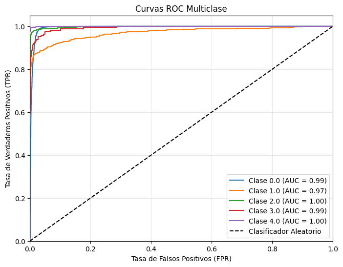
# Matriz de confusión
plt.figure(figsize=(6,5))
sns.heatmap(lstm_results["confusion_matrix"], annot=True, fmt="d", cmap="Blues")
plt.title("Matriz de Confusión")
plt.xlabel("Predicción")
plt.ylabel("Real")
plt.show()
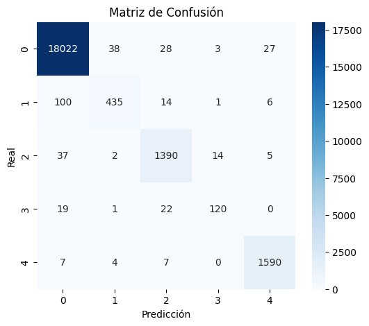
print(lstm_results["classification_report"])
precision recall f1-score support
0 0.99 0.99 0.99 18118
1 0.91 0.78 0.84 556
2 0.95 0.96 0.96 1448
3 0.87 0.74 0.80 162
4 0.98 0.99 0.98 1608
accuracy 0.98 21892
macro avg 0.94 0.89 0.91 21892
weighted avg 0.98 0.98 0.98 21892
CNN#
# Inicialmente ajustamos los datos al formato requerido
X = df_train.iloc[:, :-1].values.reshape((-1, 187, 1)).astype(np.float32)
y = tf.keras.utils.to_categorical(df_train.iloc[:, -1].values.astype(int), num_classes=5)
X_train, X_val, y_train, y_val = train_test_split(X, y, test_size=0.2, stratify=y, random_state=42)
X_test = df_test.iloc[:, :-1].values.reshape((-1, 187, 1)).astype(np.float32)
y_test = tf.keras.utils.to_categorical(df_test.iloc[:, -1].values.astype(int), num_classes=5)
# Definimos el modelo CNN con Keras Tuner y sus hiperparámetros
def build_model_cnn(hp):
model = Sequential()
model.add(layers.Conv1D(
filters=hp.Int('filters', 32, 128, step=32),
kernel_size=hp.Choice('kernel_size', [3, 5, 7]),
activation='relu',
input_shape=(187, 1)
))
model.add(layers.MaxPooling1D(pool_size=2))
model.add(Dropout(hp.Float('dropout1', 0.2, 0.5, step=0.1)))
model.add(layers.Conv1D(
filters=hp.Int('filters2', 32, 128, step=32),
kernel_size=hp.Choice('kernel_size2', [3, 5]),
activation='relu'
))
model.add(layers.MaxPooling1D(pool_size=2))
model.add(Dropout(hp.Float('dropout2', 0.2, 0.5, step=0.1)))
model.add(layers.Flatten())
model.add(Dense(
units=hp.Int('dense_units', 32, 128, step=32),
activation='relu'
))
model.add(Dense(5, activation='softmax'))
model.compile(
optimizer=keras.optimizers.Adam(learning_rate=hp.Choice('lr', [1e-2, 1e-3, 1e-4])),
loss='categorical_crossentropy',
metrics=[metrics.Recall(name='recall'), 'accuracy']
)
return model
# Se define le tunner utilizando el modelo y se crear un early stopping para evitar el sobreajuste
tuner_cnn = kt.Hyperband(
build_model_cnn,
objective=kt.Objective('val_recall', direction='max'),
max_epochs=100,
seed=42,
directory='models',
project_name='cnn'
)
tuner_cnn.search_space_summary()
early_stop = tf.keras.callbacks.EarlyStopping(
monitor='val_recall',
mode='max',
patience=5,
restore_best_weights=True,
verbose=1
)
Search space summary
Default search space size: 8
filters (Int)
{'default': None, 'conditions': [], 'min_value': 32, 'max_value': 128, 'step': 32, 'sampling': 'linear'}
kernel_size (Choice)
{'default': 3, 'conditions': [], 'values': [3, 5, 7], 'ordered': True}
dropout1 (Float)
{'default': 0.2, 'conditions': [], 'min_value': 0.2, 'max_value': 0.5, 'step': 0.1, 'sampling': 'linear'}
filters2 (Int)
{'default': None, 'conditions': [], 'min_value': 32, 'max_value': 128, 'step': 32, 'sampling': 'linear'}
kernel_size2 (Choice)
{'default': 3, 'conditions': [], 'values': [3, 5], 'ordered': True}
dropout2 (Float)
{'default': 0.2, 'conditions': [], 'min_value': 0.2, 'max_value': 0.5, 'step': 0.1, 'sampling': 'linear'}
dense_units (Int)
{'default': None, 'conditions': [], 'min_value': 32, 'max_value': 128, 'step': 32, 'sampling': 'linear'}
lr (Choice)
{'default': 0.01, 'conditions': [], 'values': [0.01, 0.001, 0.0001], 'ordered': True}
start_time_tuner = time.time()
tuner_cnn.search(
X_train, y_train,
epochs=10,
validation_data=(X_val, y_val),
batch_size=64,
callbacks=[early_stop],
verbose=1
)
search_time_tuner = time.time() - start_time_tuner
Trial 254 Complete [00h 07m 19s]
val_recall: 0.973388135433197
Best val_recall So Far: 0.9876648783683777
Total elapsed time: 03h 39m 47s
# Con esto, lo mejores hyperparámetros
best_hps_cnn = tuner_cnn.get_best_hyperparameters(1)[0]
print("\n Mejores hiperparámetros encontrados:")
print(f"Filters: {best_hps_cnn.get('filters')}")
print(f"Kernel size: {best_hps_cnn.get('kernel_size')}")
print(f"Dense units: {best_hps_cnn.get('dense_units')}")
print(f"Dropout: {best_hps_cnn.get('dropout1')}, {best_hps_cnn.get('dropout2')}")
print(f"Learning rate: {best_hps_cnn.get('lr')}")
Mejores hiperparámetros encontrados:
Filters: 96
Kernel size: 5
Dense units: 128
Dropout: 0.30000000000000004, 0.30000000000000004
Learning rate: 0.001
# Se define el modelo final con los mejores hiperparámetros y se entrena nuevamente
final_cnn_model = tuner_cnn.hypermodel.build(best_hps_cnn)
final_cnn_model.summary()
Model: "sequential_1"
_________________________________________________________________
Layer (type) Output Shape Param #
=================================================================
conv1d_2 (Conv1D) (None, 183, 96) 576
max_pooling1d_2 (MaxPooling (None, 91, 96) 0
1D)
dropout_2 (Dropout) (None, 91, 96) 0
conv1d_3 (Conv1D) (None, 87, 64) 30784
max_pooling1d_3 (MaxPooling (None, 43, 64) 0
1D)
dropout_3 (Dropout) (None, 43, 64) 0
flatten_1 (Flatten) (None, 2752) 0
dense_2 (Dense) (None, 128) 352384
dense_3 (Dense) (None, 5) 645
=================================================================
Total params: 384,389
Trainable params: 384,389
Non-trainable params: 0
_________________________________________________________________
history_cnn = final_cnn_model.fit(
X_train, y_train,
epochs=50,
batch_size=64,
validation_data=(X_val, y_val),
callbacks=[early_stop]
)
Epoch 1/50
1095/1095 [==============================] - 9s 8ms/step - loss: 0.2415 - recall: 0.9243 - accuracy: 0.9325 - val_loss: 0.1448 - val_recall: 0.9553 - val_accuracy: 0.9578
Epoch 2/50
1095/1095 [==============================] - 8s 7ms/step - loss: 0.1349 - recall: 0.9597 - accuracy: 0.9626 - val_loss: 0.1125 - val_recall: 0.9671 - val_accuracy: 0.9690
Epoch 3/50
1095/1095 [==============================] - 8s 7ms/step - loss: 0.1086 - recall: 0.9670 - accuracy: 0.9689 - val_loss: 0.0972 - val_recall: 0.9709 - val_accuracy: 0.9720
Epoch 4/50
1095/1095 [==============================] - 7s 7ms/step - loss: 0.0912 - recall: 0.9719 - accuracy: 0.9734 - val_loss: 0.0817 - val_recall: 0.9749 - val_accuracy: 0.9762
Epoch 5/50
1095/1095 [==============================] - 7s 7ms/step - loss: 0.0803 - recall: 0.9753 - accuracy: 0.9766 - val_loss: 0.0752 - val_recall: 0.9779 - val_accuracy: 0.9790
Epoch 6/50
1095/1095 [==============================] - 7s 7ms/step - loss: 0.0727 - recall: 0.9772 - accuracy: 0.9783 - val_loss: 0.0691 - val_recall: 0.9790 - val_accuracy: 0.9798
Epoch 7/50
1095/1095 [==============================] - 8s 7ms/step - loss: 0.0650 - recall: 0.9795 - accuracy: 0.9805 - val_loss: 0.0684 - val_recall: 0.9802 - val_accuracy: 0.9809
Epoch 8/50
1095/1095 [==============================] - 8s 7ms/step - loss: 0.0601 - recall: 0.9807 - accuracy: 0.9815 - val_loss: 0.0652 - val_recall: 0.9818 - val_accuracy: 0.9827
Epoch 9/50
1095/1095 [==============================] - 8s 7ms/step - loss: 0.0557 - recall: 0.9821 - accuracy: 0.9828 - val_loss: 0.0644 - val_recall: 0.9824 - val_accuracy: 0.9827
Epoch 10/50
1095/1095 [==============================] - 8s 7ms/step - loss: 0.0509 - recall: 0.9836 - accuracy: 0.9842 - val_loss: 0.0643 - val_recall: 0.9820 - val_accuracy: 0.9824
Epoch 11/50
1095/1095 [==============================] - 8s 7ms/step - loss: 0.0484 - recall: 0.9841 - accuracy: 0.9848 - val_loss: 0.0607 - val_recall: 0.9839 - val_accuracy: 0.9845
Epoch 12/50
1095/1095 [==============================] - 8s 8ms/step - loss: 0.0452 - recall: 0.9850 - accuracy: 0.9855 - val_loss: 0.0622 - val_recall: 0.9829 - val_accuracy: 0.9837
Epoch 13/50
1095/1095 [==============================] - 8s 7ms/step - loss: 0.0400 - recall: 0.9869 - accuracy: 0.9874 - val_loss: 0.0659 - val_recall: 0.9836 - val_accuracy: 0.9842
Epoch 14/50
1095/1095 [==============================] - 8s 7ms/step - loss: 0.0385 - recall: 0.9870 - accuracy: 0.9876 - val_loss: 0.0601 - val_recall: 0.9852 - val_accuracy: 0.9854
Epoch 15/50
1095/1095 [==============================] - 8s 7ms/step - loss: 0.0371 - recall: 0.9874 - accuracy: 0.9879 - val_loss: 0.0630 - val_recall: 0.9835 - val_accuracy: 0.9842
Epoch 16/50
1095/1095 [==============================] - 8s 7ms/step - loss: 0.0367 - recall: 0.9876 - accuracy: 0.9881 - val_loss: 0.0563 - val_recall: 0.9860 - val_accuracy: 0.9864
Epoch 17/50
1095/1095 [==============================] - 8s 8ms/step - loss: 0.0334 - recall: 0.9883 - accuracy: 0.9887 - val_loss: 0.0604 - val_recall: 0.9865 - val_accuracy: 0.9868
Epoch 18/50
1095/1095 [==============================] - 7s 7ms/step - loss: 0.0317 - recall: 0.9891 - accuracy: 0.9895 - val_loss: 0.0601 - val_recall: 0.9864 - val_accuracy: 0.9865
Epoch 19/50
1095/1095 [==============================] - 7s 7ms/step - loss: 0.0313 - recall: 0.9893 - accuracy: 0.9896 - val_loss: 0.0665 - val_recall: 0.9849 - val_accuracy: 0.9852
Epoch 20/50
1095/1095 [==============================] - 8s 7ms/step - loss: 0.0277 - recall: 0.9909 - accuracy: 0.9913 - val_loss: 0.0646 - val_recall: 0.9860 - val_accuracy: 0.9863
Epoch 21/50
1095/1095 [==============================] - 8s 7ms/step - loss: 0.0282 - recall: 0.9904 - accuracy: 0.9905 - val_loss: 0.0638 - val_recall: 0.9862 - val_accuracy: 0.9863
Epoch 22/50
1090/1095 [============================>.] - ETA: 0s - loss: 0.0271 - recall: 0.9903 - accuracy: 0.9905Restoring model weights from the end of the best epoch: 17.
1095/1095 [==============================] - 8s 7ms/step - loss: 0.0270 - recall: 0.9903 - accuracy: 0.9906 - val_loss: 0.0651 - val_recall: 0.9858 - val_accuracy: 0.9860
Epoch 22: early stopping
# Se evalúa el modelo con los datos de test y se guardan los resultados
evaluate_and_save_keras_model(final_cnn_model, "cnn", X_test, y_test, search_time_tuner)
plt.plot(history_cnn.history['recall'], label='Entrenamiento')
plt.plot(history_cnn.history['val_recall'], label='Validación')
plt.title('recall vs Épocas')
plt.xlabel('Épocas')
plt.ylabel('recall')
plt.legend()
<matplotlib.legend.Legend at 0x210c4f735b0>
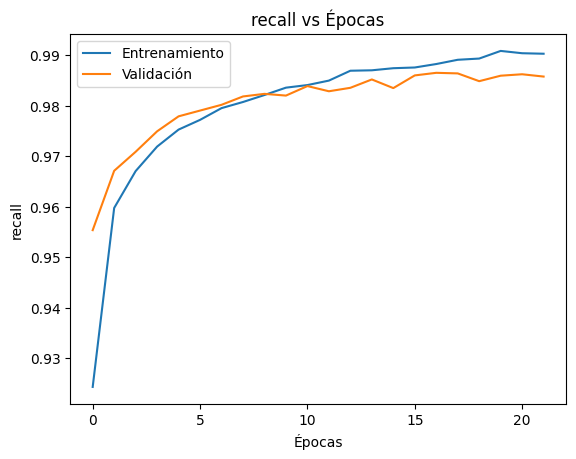
Análisis de los resultados para CNN#
cnn_results = joblib.load("results/cnn_results.pkl") # Se cargan los rulustados obtenidos
from sklearn.metrics import roc_curve, auc # Dejarlo aquí
y_pred_proba = cnn_results['y_pred_prob']
# Binarización de las clases
classes = np.unique(y_test)
y_test_bin = label_binarize(y_test, classes=classes)
n_classes = y_test_bin.shape[1]
# Inicialización de diccionarios para almacenar métricas
fpr, tpr, roc_auc = {}, {}, {}
# Cálculo de las curvas ROC y AUC
plt.figure(figsize=(8, 6))
for i in range(n_classes):
fpr[i], tpr[i], _ = roc_curve(y_test_bin[:, i], y_pred_proba[:, i])
roc_auc[i] = auc(fpr[i], tpr[i])
plt.plot(fpr[i], tpr[i], label=f'Clase {classes[i]} (AUC = {roc_auc[i]:.2f})')
# Gráfica de la línea diagonal (clasificador aleatorio)
plt.plot([0, 1], [0, 1], 'k--', label='Clasificador Aleatorio')
# Configuración de la gráfica
plt.xlim([0.0, 1.0])
plt.ylim([0.0, 1.05])
plt.xlabel('Tasa de Falsos Positivos (FPR)')
plt.ylabel('Tasa de Verdaderos Positivos (TPR)')
plt.title('Curvas ROC Multiclase')
plt.legend(loc="lower right")
plt.grid(alpha=0.3)
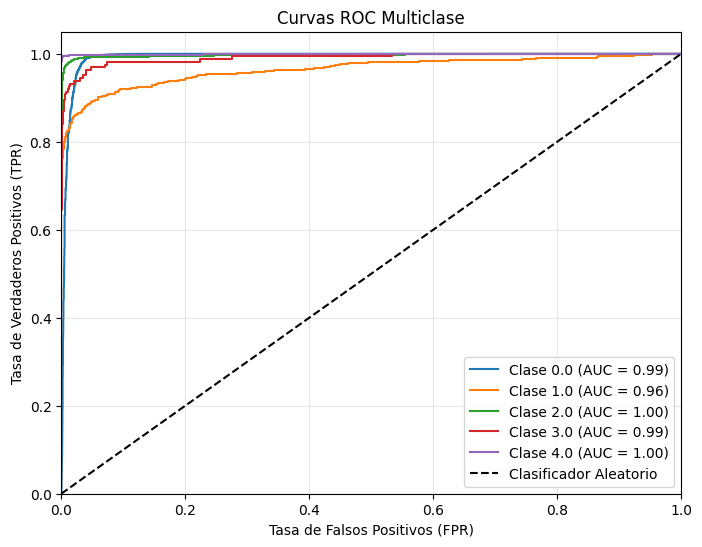
# Matriz de confusión
plt.figure(figsize=(6,5))
sns.heatmap(cnn_results["confusion_matrix"], annot=True, fmt="d", cmap="Blues")
plt.title("Matriz de Confusión")
plt.xlabel("Predicción")
plt.ylabel("Real")
plt.show()
print(cnn_results["classification_report"])
precision recall f1-score support
0 0.99 1.00 0.99 18118
1 0.93 0.75 0.83 556
2 0.97 0.94 0.96 1448
3 0.84 0.81 0.82 162
4 0.99 0.99 0.99 1608
accuracy 0.98 21892
macro avg 0.94 0.90 0.92 21892
weighted avg 0.98 0.98 0.98 21892
Autoencoder#
# Ajuste de los datos para el autoencoder
X = df_train.iloc[:, :-1].values.reshape((-1, 187, 1)).astype(np.float32)
y = tf.keras.utils.to_categorical(df_train.iloc[:, -1].values.astype(int), num_classes=5)
X_train, X_val, y_train, y_val = train_test_split(X, y, test_size=0.2, stratify=y, random_state=42)
X_test = df_test.iloc[:, :-1].values.reshape((-1, 187, 1)).astype(np.float32)
y_test = tf.keras.utils.to_categorical(df_test.iloc[:, -1].values.astype(int), num_classes=5)
def build_autoencoder_model(hp):
lstm_units = hp.Int('lstm_units', 64, 128, step=32)
dense_units = hp.Int('dense_units', 64, 128, step=32)
dropout_rate = hp.Float('dropout_rate', 0.0, 0.2, step=0.1)
alpha = hp.Choice('alpha', [0.25, 0.5])
beta = hp.Choice('beta', [0.25, 0.5])
inputs = Input(shape=(187, 1))
# Encoder
x = layers.LSTM(lstm_units, return_sequences=False)(inputs)
x = layers.Dropout(dropout_rate)(x)
bottleneck = layers.Dense(dense_units, activation='relu')(x)
# Decoder
x_dec = layers.RepeatVector(187)(bottleneck)
x_dec = layers.LSTM(lstm_units, return_sequences=True)(x_dec)
outputs_recon = layers.TimeDistributed(layers.Dense(1), name='reconstruction')(x_dec)
# Clasificador
outputs_class = layers.Dense(5, activation='softmax', name='classification')(bottleneck)
model = Model(inputs=inputs, outputs=[outputs_recon, outputs_class])
model.compile(
optimizer=keras.optimizers.Adam(
learning_rate=hp.Choice('lr', [1e-2, 1e-3, 1e-4])
),
loss={
'reconstruction': losses.MeanSquaredError(),
'classification': losses.CategoricalCrossentropy()
},
loss_weights={'reconstruction': alpha, 'classification': beta},
metrics={'classification': [metrics.Recall(name='recall'), 'accuracy']}
)
return model
tuner_autoencoder = kt.Hyperband(
build_autoencoder_model,
objective=kt.Objective("val_classification_recall", direction="max"),
max_epochs=30,
seed=42,
executions_per_trial=1,
directory='models',
project_name='autoencoder',
overwrite=True
)
tuner_autoencoder.search_space_summary()
Search space summary
Default search space size: 6
lstm_units (Int)
{'default': None, 'conditions': [], 'min_value': 64, 'max_value': 128, 'step': 32, 'sampling': 'linear'}
dense_units (Int)
{'default': None, 'conditions': [], 'min_value': 64, 'max_value': 128, 'step': 32, 'sampling': 'linear'}
dropout_rate (Float)
{'default': 0.0, 'conditions': [], 'min_value': 0.0, 'max_value': 0.2, 'step': 0.1, 'sampling': 'linear'}
alpha (Choice)
{'default': 0.25, 'conditions': [], 'values': [0.25, 0.5], 'ordered': True}
beta (Choice)
{'default': 0.25, 'conditions': [], 'values': [0.25, 0.5], 'ordered': True}
lr (Choice)
{'default': 0.01, 'conditions': [], 'values': [0.01, 0.001, 0.0001], 'ordered': True}
early_stop = tf.keras.callbacks.EarlyStopping(
monitor='val_classification_recall',
mode='max',
patience=10,
restore_best_weights=True,
verbose=1
)
start_time_tuner = time.time()
tuner_autoencoder.search(
X_train,
{'reconstruction': X_train, 'classification': y_train},
epochs=10,
validation_data=(X_val, {'reconstruction': X_val, 'classification': y_val}),
batch_size=64,
callbacks=[early_stop],
verbose=1
)
search_time_tuner = time.time() - start_time_tuner
Trial 90 Complete [00h 22m 21s]
val_classification_recall: 0.8899548649787903
Best val_classification_recall So Far: 0.9801838994026184
Total elapsed time: 07h 38m 59s
# Con esto, lo mejores hyperparámetros
best_hps_ae = tuner_autoencoder.get_best_hyperparameters(1)[0]
# Se define el modelo final con los mejores hiperparámetros y se entrena nuevamente
final_ae_model = tuner_autoencoder.hypermodel.build(best_hps_ae)
final_ae_model.summary()
Model: "model_2"
__________________________________________________________________________________________________
Layer (type) Output Shape Param # Connected to
==================================================================================================
input_3 (InputLayer) [(None, 187, 1)] 0 []
lstm_4 (LSTM) (None, 128) 66560 ['input_3[0][0]']
dropout_2 (Dropout) (None, 128) 0 ['lstm_4[0][0]']
dense_4 (Dense) (None, 128) 16512 ['dropout_2[0][0]']
repeat_vector_2 (RepeatVector) (None, 187, 128) 0 ['dense_4[0][0]']
lstm_5 (LSTM) (None, 187, 128) 131584 ['repeat_vector_2[0][0]']
reconstruction (TimeDistribute (None, 187, 1) 129 ['lstm_5[0][0]']
d)
classification (Dense) (None, 5) 645 ['dense_4[0][0]']
==================================================================================================
Total params: 215,430
Trainable params: 215,430
Non-trainable params: 0
__________________________________________________________________________________________________
history_autoencoder = final_ae_model.fit(
X_train, {'reconstruction': X_train, 'classification': y_train},
epochs=100,
batch_size=64,
validation_data=(X_val, {'reconstruction': X_val, 'classification': y_val}),
callbacks=[early_stop]
)
Epoch 1/100
1095/1095 [==============================] - 61s 53ms/step - loss: 0.1864 - reconstruction_loss: 0.0388 - classification_loss: 0.6682 - classification_recall: 0.8191 - classification_accuracy: 0.8273 - val_loss: 0.1762 - val_reconstruction_loss: 0.0303 - val_classification_loss: 0.6441 - val_classification_recall: 0.8277 - val_classification_accuracy: 0.8277
Epoch 2/100
1095/1095 [==============================] - 56s 51ms/step - loss: 0.1602 - reconstruction_loss: 0.0301 - classification_loss: 0.5807 - classification_recall: 0.8076 - classification_accuracy: 0.8316 - val_loss: 0.1829 - val_reconstruction_loss: 0.0345 - val_classification_loss: 0.6625 - val_classification_recall: 0.8278 - val_classification_accuracy: 0.8278
Epoch 3/100
1095/1095 [==============================] - 55s 51ms/step - loss: 0.1572 - reconstruction_loss: 0.0300 - classification_loss: 0.5689 - classification_recall: 0.8332 - classification_accuracy: 0.8437 - val_loss: 0.1266 - val_reconstruction_loss: 0.0247 - val_classification_loss: 0.4569 - val_classification_recall: 0.8457 - val_classification_accuracy: 0.8612
Epoch 4/100
1095/1095 [==============================] - 56s 51ms/step - loss: 0.0979 - reconstruction_loss: 0.0210 - classification_loss: 0.3496 - classification_recall: 0.9028 - classification_accuracy: 0.9084 - val_loss: 0.0878 - val_reconstruction_loss: 0.0189 - val_classification_loss: 0.3134 - val_classification_recall: 0.9122 - val_classification_accuracy: 0.9183
Epoch 5/100
1095/1095 [==============================] - 56s 51ms/step - loss: 0.0911 - reconstruction_loss: 0.0193 - classification_loss: 0.3258 - classification_recall: 0.9106 - classification_accuracy: 0.9167 - val_loss: 0.0827 - val_reconstruction_loss: 0.0177 - val_classification_loss: 0.2953 - val_classification_recall: 0.9214 - val_classification_accuracy: 0.9250
Epoch 6/100
1095/1095 [==============================] - 56s 51ms/step - loss: 0.0684 - reconstruction_loss: 0.0154 - classification_loss: 0.2429 - classification_recall: 0.9333 - classification_accuracy: 0.9363 - val_loss: 0.0642 - val_reconstruction_loss: 0.0153 - val_classification_loss: 0.2263 - val_classification_recall: 0.9336 - val_classification_accuracy: 0.9359
Epoch 7/100
1095/1095 [==============================] - 55s 51ms/step - loss: 0.0553 - reconstruction_loss: 0.0140 - classification_loss: 0.1933 - classification_recall: 0.9416 - classification_accuracy: 0.9461 - val_loss: 0.0506 - val_reconstruction_loss: 0.0143 - val_classification_loss: 0.1737 - val_classification_recall: 0.9485 - val_classification_accuracy: 0.9545
Epoch 8/100
1095/1095 [==============================] - 56s 51ms/step - loss: 0.0493 - reconstruction_loss: 0.0135 - classification_loss: 0.1702 - classification_recall: 0.9466 - classification_accuracy: 0.9513 - val_loss: 0.0453 - val_reconstruction_loss: 0.0122 - val_classification_loss: 0.1567 - val_classification_recall: 0.9496 - val_classification_accuracy: 0.9547
Epoch 9/100
1095/1095 [==============================] - 57s 52ms/step - loss: 0.0438 - reconstruction_loss: 0.0123 - classification_loss: 0.1506 - classification_recall: 0.9520 - classification_accuracy: 0.9567 - val_loss: 0.0422 - val_reconstruction_loss: 0.0112 - val_classification_loss: 0.1463 - val_classification_recall: 0.9549 - val_classification_accuracy: 0.9595
Epoch 10/100
1095/1095 [==============================] - 58s 53ms/step - loss: 0.0429 - reconstruction_loss: 0.0118 - classification_loss: 0.1480 - classification_recall: 0.9534 - classification_accuracy: 0.9582 - val_loss: 0.0396 - val_reconstruction_loss: 0.0110 - val_classification_loss: 0.1363 - val_classification_recall: 0.9591 - val_classification_accuracy: 0.9631
Epoch 11/100
1095/1095 [==============================] - 56s 51ms/step - loss: 0.0391 - reconstruction_loss: 0.0110 - classification_loss: 0.1344 - classification_recall: 0.9579 - classification_accuracy: 0.9623 - val_loss: 0.0403 - val_reconstruction_loss: 0.0109 - val_classification_loss: 0.1394 - val_classification_recall: 0.9567 - val_classification_accuracy: 0.9619
Epoch 12/100
1095/1095 [==============================] - 56s 51ms/step - loss: 0.0365 - reconstruction_loss: 0.0107 - classification_loss: 0.1246 - classification_recall: 0.9618 - classification_accuracy: 0.9655 - val_loss: 0.0368 - val_reconstruction_loss: 0.0109 - val_classification_loss: 0.1255 - val_classification_recall: 0.9620 - val_classification_accuracy: 0.9650
Epoch 13/100
1095/1095 [==============================] - 56s 51ms/step - loss: 0.0342 - reconstruction_loss: 0.0099 - classification_loss: 0.1171 - classification_recall: 0.9645 - classification_accuracy: 0.9679 - val_loss: 0.0334 - val_reconstruction_loss: 0.0083 - val_classification_loss: 0.1169 - val_classification_recall: 0.9660 - val_classification_accuracy: 0.9683
Epoch 14/100
1095/1095 [==============================] - 58s 53ms/step - loss: 0.0339 - reconstruction_loss: 0.0096 - classification_loss: 0.1163 - classification_recall: 0.9643 - classification_accuracy: 0.9673 - val_loss: 0.0329 - val_reconstruction_loss: 0.0086 - val_classification_loss: 0.1144 - val_classification_recall: 0.9655 - val_classification_accuracy: 0.9681
Epoch 15/100
1095/1095 [==============================] - 55s 51ms/step - loss: 0.0316 - reconstruction_loss: 0.0087 - classification_loss: 0.1090 - classification_recall: 0.9674 - classification_accuracy: 0.9699 - val_loss: 0.0299 - val_reconstruction_loss: 0.0083 - val_classification_loss: 0.1032 - val_classification_recall: 0.9702 - val_classification_accuracy: 0.9726
Epoch 16/100
1095/1095 [==============================] - 56s 51ms/step - loss: 0.0300 - reconstruction_loss: 0.0084 - classification_loss: 0.1034 - classification_recall: 0.9688 - classification_accuracy: 0.9712 - val_loss: 0.0296 - val_reconstruction_loss: 0.0078 - val_classification_loss: 0.1028 - val_classification_recall: 0.9698 - val_classification_accuracy: 0.9711
Epoch 17/100
1095/1095 [==============================] - 56s 52ms/step - loss: 0.0291 - reconstruction_loss: 0.0081 - classification_loss: 0.1002 - classification_recall: 0.9694 - classification_accuracy: 0.9715 - val_loss: 0.0267 - val_reconstruction_loss: 0.0068 - val_classification_loss: 0.0934 - val_classification_recall: 0.9708 - val_classification_accuracy: 0.9726
Epoch 18/100
1095/1095 [==============================] - 56s 51ms/step - loss: 0.0266 - reconstruction_loss: 0.0075 - classification_loss: 0.0916 - classification_recall: 0.9726 - classification_accuracy: 0.9745 - val_loss: 0.0311 - val_reconstruction_loss: 0.0084 - val_classification_loss: 0.1075 - val_classification_recall: 0.9688 - val_classification_accuracy: 0.9708
Epoch 19/100
1095/1095 [==============================] - 56s 51ms/step - loss: 0.0261 - reconstruction_loss: 0.0073 - classification_loss: 0.0896 - classification_recall: 0.9730 - classification_accuracy: 0.9751 - val_loss: 0.0257 - val_reconstruction_loss: 0.0073 - val_classification_loss: 0.0881 - val_classification_recall: 0.9740 - val_classification_accuracy: 0.9756
Epoch 20/100
1095/1095 [==============================] - 56s 51ms/step - loss: 0.0253 - reconstruction_loss: 0.0071 - classification_loss: 0.0871 - classification_recall: 0.9735 - classification_accuracy: 0.9748 - val_loss: 0.0367 - val_reconstruction_loss: 0.0085 - val_classification_loss: 0.1299 - val_classification_recall: 0.9635 - val_classification_accuracy: 0.9652
Epoch 21/100
1095/1095 [==============================] - 57s 52ms/step - loss: 0.0246 - reconstruction_loss: 0.0070 - classification_loss: 0.0844 - classification_recall: 0.9741 - classification_accuracy: 0.9759 - val_loss: 0.0284 - val_reconstruction_loss: 0.0072 - val_classification_loss: 0.0991 - val_classification_recall: 0.9724 - val_classification_accuracy: 0.9736
Epoch 22/100
1095/1095 [==============================] - 57s 52ms/step - loss: 0.0236 - reconstruction_loss: 0.0067 - classification_loss: 0.0809 - classification_recall: 0.9757 - classification_accuracy: 0.9770 - val_loss: 0.0253 - val_reconstruction_loss: 0.0061 - val_classification_loss: 0.0891 - val_classification_recall: 0.9747 - val_classification_accuracy: 0.9758
Epoch 23/100
1095/1095 [==============================] - 56s 52ms/step - loss: 0.0231 - reconstruction_loss: 0.0067 - classification_loss: 0.0788 - classification_recall: 0.9761 - classification_accuracy: 0.9772 - val_loss: 0.0355 - val_reconstruction_loss: 0.0092 - val_classification_loss: 0.1237 - val_classification_recall: 0.9668 - val_classification_accuracy: 0.9674
Epoch 24/100
1095/1095 [==============================] - 56s 52ms/step - loss: 0.0225 - reconstruction_loss: 0.0067 - classification_loss: 0.0768 - classification_recall: 0.9765 - classification_accuracy: 0.9779 - val_loss: 0.0239 - val_reconstruction_loss: 0.0061 - val_classification_loss: 0.0835 - val_classification_recall: 0.9756 - val_classification_accuracy: 0.9769
Epoch 25/100
1095/1095 [==============================] - 57s 52ms/step - loss: 0.0217 - reconstruction_loss: 0.0064 - classification_loss: 0.0742 - classification_recall: 0.9775 - classification_accuracy: 0.9785 - val_loss: 0.0227 - val_reconstruction_loss: 0.0062 - val_classification_loss: 0.0784 - val_classification_recall: 0.9759 - val_classification_accuracy: 0.9776
Epoch 26/100
1095/1095 [==============================] - 57s 52ms/step - loss: 0.0211 - reconstruction_loss: 0.0060 - classification_loss: 0.0724 - classification_recall: 0.9778 - classification_accuracy: 0.9792 - val_loss: 0.0240 - val_reconstruction_loss: 0.0059 - val_classification_loss: 0.0842 - val_classification_recall: 0.9749 - val_classification_accuracy: 0.9762
Epoch 27/100
1095/1095 [==============================] - 56s 52ms/step - loss: 0.0202 - reconstruction_loss: 0.0058 - classification_loss: 0.0694 - classification_recall: 0.9783 - classification_accuracy: 0.9796 - val_loss: 0.0229 - val_reconstruction_loss: 0.0066 - val_classification_loss: 0.0783 - val_classification_recall: 0.9777 - val_classification_accuracy: 0.9783
Epoch 28/100
1095/1095 [==============================] - 58s 53ms/step - loss: 0.0200 - reconstruction_loss: 0.0056 - classification_loss: 0.0688 - classification_recall: 0.9790 - classification_accuracy: 0.9801 - val_loss: 0.0218 - val_reconstruction_loss: 0.0055 - val_classification_loss: 0.0760 - val_classification_recall: 0.9786 - val_classification_accuracy: 0.9798
Epoch 29/100
1095/1095 [==============================] - 57s 52ms/step - loss: 0.0196 - reconstruction_loss: 0.0056 - classification_loss: 0.0673 - classification_recall: 0.9793 - classification_accuracy: 0.9803 - val_loss: 0.0198 - val_reconstruction_loss: 0.0049 - val_classification_loss: 0.0692 - val_classification_recall: 0.9808 - val_classification_accuracy: 0.9817
Epoch 30/100
1095/1095 [==============================] - 57s 52ms/step - loss: 0.0185 - reconstruction_loss: 0.0054 - classification_loss: 0.0631 - classification_recall: 0.9801 - classification_accuracy: 0.9812 - val_loss: 0.0236 - val_reconstruction_loss: 0.0065 - val_classification_loss: 0.0813 - val_classification_recall: 0.9760 - val_classification_accuracy: 0.9768
Epoch 31/100
1095/1095 [==============================] - 56s 51ms/step - loss: 0.0184 - reconstruction_loss: 0.0055 - classification_loss: 0.0627 - classification_recall: 0.9803 - classification_accuracy: 0.9812 - val_loss: 0.0210 - val_reconstruction_loss: 0.0050 - val_classification_loss: 0.0740 - val_classification_recall: 0.9786 - val_classification_accuracy: 0.9798
Epoch 32/100
1095/1095 [==============================] - 57s 52ms/step - loss: 0.0184 - reconstruction_loss: 0.0053 - classification_loss: 0.0631 - classification_recall: 0.9805 - classification_accuracy: 0.9816 - val_loss: 0.0198 - val_reconstruction_loss: 0.0058 - val_classification_loss: 0.0675 - val_classification_recall: 0.9807 - val_classification_accuracy: 0.9814
Epoch 33/100
1095/1095 [==============================] - 57s 52ms/step - loss: 0.0174 - reconstruction_loss: 0.0051 - classification_loss: 0.0593 - classification_recall: 0.9811 - classification_accuracy: 0.9820 - val_loss: 0.0200 - val_reconstruction_loss: 0.0046 - val_classification_loss: 0.0708 - val_classification_recall: 0.9796 - val_classification_accuracy: 0.9805
Epoch 34/100
1095/1095 [==============================] - 55s 51ms/step - loss: 0.0228 - reconstruction_loss: 0.0057 - classification_loss: 0.0799 - classification_recall: 0.9751 - classification_accuracy: 0.9764 - val_loss: 0.0209 - val_reconstruction_loss: 0.0051 - val_classification_loss: 0.0735 - val_classification_recall: 0.9784 - val_classification_accuracy: 0.9797
Epoch 35/100
1095/1095 [==============================] - 57s 52ms/step - loss: 0.0168 - reconstruction_loss: 0.0048 - classification_loss: 0.0575 - classification_recall: 0.9821 - classification_accuracy: 0.9830 - val_loss: 0.0202 - val_reconstruction_loss: 0.0060 - val_classification_loss: 0.0690 - val_classification_recall: 0.9800 - val_classification_accuracy: 0.9813
Epoch 36/100
1095/1095 [==============================] - 56s 51ms/step - loss: 0.0163 - reconstruction_loss: 0.0047 - classification_loss: 0.0556 - classification_recall: 0.9822 - classification_accuracy: 0.9829 - val_loss: 0.0203 - val_reconstruction_loss: 0.0045 - val_classification_loss: 0.0719 - val_classification_recall: 0.9794 - val_classification_accuracy: 0.9813
Epoch 37/100
1095/1095 [==============================] - 56s 51ms/step - loss: 0.0155 - reconstruction_loss: 0.0046 - classification_loss: 0.0529 - classification_recall: 0.9832 - classification_accuracy: 0.9842 - val_loss: 0.0208 - val_reconstruction_loss: 0.0051 - val_classification_loss: 0.0732 - val_classification_recall: 0.9799 - val_classification_accuracy: 0.9801
Epoch 38/100
1095/1095 [==============================] - 56s 51ms/step - loss: 0.0169 - reconstruction_loss: 0.0049 - classification_loss: 0.0578 - classification_recall: 0.9818 - classification_accuracy: 0.9826 - val_loss: 0.0310 - val_reconstruction_loss: 0.0068 - val_classification_loss: 0.1102 - val_classification_recall: 0.9689 - val_classification_accuracy: 0.9705
Epoch 39/100
1094/1095 [============================>.] - ETA: 0s - loss: 0.0172 - reconstruction_loss: 0.0060 - classification_loss: 0.0570 - classification_recall: 0.9816 - classification_accuracy: 0.9826Restoring model weights from the end of the best epoch: 29.
1095/1095 [==============================] - 57s 52ms/step - loss: 0.0172 - reconstruction_loss: 0.0060 - classification_loss: 0.0570 - classification_recall: 0.9816 - classification_accuracy: 0.9826 - val_loss: 0.0200 - val_reconstruction_loss: 0.0047 - val_classification_loss: 0.0704 - val_classification_recall: 0.9797 - val_classification_accuracy: 0.9806
Epoch 39: early stopping
# Obtener predicciones y convertir a etiquetas
y_pred_proba = final_ae_model.predict(X_test)
y_pred = np.argmax(y_pred_proba[1], axis=1)
y_true = np.argmax(y_test, axis=1)
685/685 [==============================] - 13s 19ms/step
# Calcular ROC AUC si es posible (multiclase 'ovr')
try:
auc = roc_auc_score(y_test, y_pred_proba[1], multi_class='ovr')
except Exception:
auc = float('nan')
# Calcular otras métricas
precision = precision_score(y_true, y_pred, average='macro')
recall = recall_score(y_true, y_pred, average='macro')
accuracy = accuracy_score(y_true, y_pred)
f1 = f1_score(y_true, y_pred, average='macro')
cm = confusion_matrix(y_true, y_pred)
report = classification_report(y_true, y_pred)
results = {
'precision_test': precision,
'recall_test': recall,
'accuracy_test': accuracy,
'f1_score_test': f1,
'confusion_matrix': cm,
'y_pred_prob': y_pred_proba,
'auc_test': auc,
'classification_report': report,
'cpu_time': search_time_tuner
}
model_name = 'autoencoder'
# Guardar los resultados y el modelo
joblib.dump(results, f"results/{model_name}_results.pkl")
final_ae_model.save(f"models/best_{model_name}_model.h5")
print(f"Modelo y resultados guardados en 'models/best_{model_name}_model.h5' y 'results/{model_name}_results.pkl'.")
Modelo y resultados guardados en 'models/best_autoencoder_model.h5' y 'results/autoencoder_results.pkl'.
Análisis de resultados#
autoencoder_results = joblib.load("results/autoencoder_results.pkl")
print(autoencoder_results["classification_report"])
precision recall f1-score support
0 0.98 0.99 0.99 18118
1 0.86 0.69 0.77 556
2 0.96 0.91 0.94 1448
3 0.71 0.71 0.71 162
4 0.98 0.97 0.98 1608
accuracy 0.98 21892
macro avg 0.90 0.86 0.88 21892
weighted avg 0.98 0.98 0.98 21892
3. Comparación de resultados de todos los modelos#
Finalmente, se presentan los resultados finales los las métricas de los modelos evaluados.
def cargar_resultados(directorio):
archivos = [f for f in os.listdir(directorio) if f.endswith(".pkl")]
resultados_totales = []
for archivo in archivos:
try:
data = joblib.load(os.path.join(directorio, archivo))
if isinstance(data, dict):
nombre_archivo_sin_extension = os.path.splitext(archivo)[0]
data["model_name"] = nombre_archivo_sin_extension
resultados_totales.append(data)
except Exception as e:
print(f"Error al cargar el archivo {archivo}: {e}")
return resultados_totales
resultados_totales = cargar_resultados('results/')
dict_to_df = []
for item in resultados_totales:
dict_to_df.append({
"model_name": item["model_name"],
"precission" : item["precision_test"],
"recall_macro": item["recall_test"],
"accuracy": item["accuracy_test"],
"f1_score": item["f1_score_test"],
"auc": item["auc_test"],
"total_cpu_time_min": item["cpu_time"]/60,
})
results_summary = pd.DataFrame(dict_to_df).sort_values(by="recall_macro", ascending=False).reset_index(drop=True)
results_summary
| model_name | precission | recall_macro | accuracy | f1_score | auc | total_cpu_time_min | |
|---|---|---|---|---|---|---|---|
| 0 | cnn_results | 0.942844 | 0.897814 | 0.984743 | 0.918445 | 0.988604 | 219.797408 |
| 1 | lstm_results | 0.938983 | 0.893313 | 0.984698 | 0.914197 | 0.991004 | 18.800000 |
| 2 | mlp_results | 0.904358 | 0.883581 | 0.977663 | 0.893657 | 0.984824 | 307.610415 |
| 3 | xgb_results | 0.959866 | 0.871120 | 0.982825 | 0.910275 | 0.991387 | 52.817633 |
| 4 | knn_results | 0.899565 | 0.868556 | 0.976201 | 0.883464 | 0.925557 | 32.473809 |
| 5 | autoencoder_results | 0.900989 | 0.855815 | 0.977298 | 0.876356 | 0.987603 | 458.988292 |
| 6 | tree_results | 0.831897 | 0.823717 | 0.961264 | 0.827697 | 0.903896 | 2.984338 |
| 7 | svc_results | 0.943355 | 0.814131 | 0.977389 | 0.866491 | 0.981456 | 287.041197 |
| 8 | rf_results | 0.962265 | 0.812568 | 0.974831 | 0.873681 | 0.992569 | 56.346595 |
| 9 | reglog_results | 0.787554 | 0.598089 | 0.914809 | 0.664022 | 0.917592 | 40.129006 |
| 10 | linear_svc_results | 0.851732 | 0.461934 | 0.904577 | 0.514120 | NaN | 5.678954 |
# Estilo de seaborn
sns.set_theme()
# Crear gráfico
plt.figure(figsize=(10, 6))
ax = sns.barplot(
data=results_summary,
x="model_name",
y="recall_macro",
hue='model_name',
palette="deep",
edgecolor=".6"
)
# Añadir valores encima de las barras
for p in ax.patches:
height = p.get_height()
ax.annotate(f'{height:.2f}',
(p.get_x() + p.get_width() / 2, height),
ha='center', va='bottom',
fontsize=10, color='black')
plt.title("Recall Macro por modelo", fontsize=16)
plt.xlabel("Modelo", fontsize=12)
plt.ylabel("Recall Macro", fontsize=12)
plt.xticks(rotation=45, fontsize=10)
plt.ylim(0, 1)
plt.tight_layout()
plt.show()
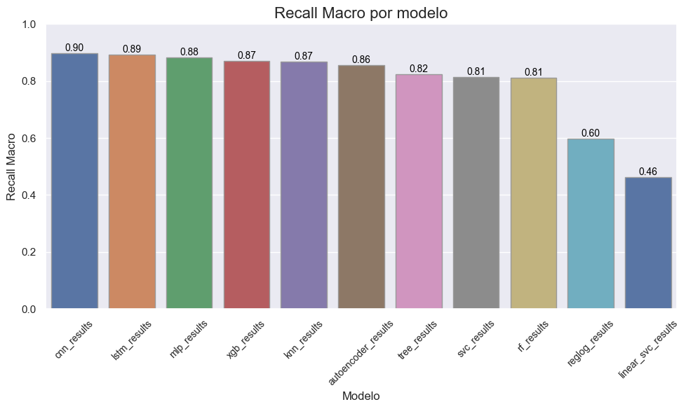